HOME
検索(基本)
メインメニュー「HOME」から、アンケートや申請などの帳票を通じて登録されたユーザのデータを検索し内容を確認することができます。
- 検索したい帳票をプルダウンから選択すると、対象となるデータの一覧が表示されます。

- 「検索条件」をクリックすると帳票に登録された項目の一覧が表示されます。

- データの絞り込みを行う場合、絞り込みたい項目を選択。「この条件で検索」をクリックします。

- 選択した条件にマッチするデータが表示されます。

検索(日付)
メインメニュー「HOME」から、アンケートや申請などの帳票を通じて登録されたユーザのデータを、登録・更新された期間をもとに抽出することができます。
- 検索したい帳票をプルダウンから選択すると、対象となるデータの一覧が表示されます。

- 「日付」をクリックすると、絞り込みを行う対象期間を指定できるフォームが表示されます。

- 絞り込みたい開始日と終了日を指定し、「この条件で検索」をクリックします。

- 指定した条件にマッチするデータが表示されます。

入力情報修正
アンケートや申請などの帳票を通じて登録されたユーザの、データ内容の修正やステータス（未対応・処理中・処理済み・完了）の設定・変更を行います。
- 修正したいデータを検索して表示します。対象となるデータが見つかったら、クリックします。

- データの内容が表示されます。必要な設定項目や入力内容を変更できます。

- データのステータスを設定・変更することができます。

- 「保存」をクリックすると、設定・変更した内容が更新されます。

CSV出力
アンケートや申請などの帳票を通じて登録されたユーザのデータを、CSV形式のデータとしてエクスポート（出力）します。
- 出力対象の帳票とデータを表示します。

- 出力する内容を絞り込む場合は「検索条件」や「日付」から抽出条件を指定し、「この条件で検索」をクリックしてデータを絞り込みます。

- 表示されたデータの最下部にある「CSV出力」をクリックし、データをダウンロードします。

- ダウンロードされたデータは、エクセルやテキストエディタなどのアプリケーションで閲覧や編集することができます。

追加型帳票の削除
追加型帳票の削除の仕方について説明します。追加型帳票は、1つの帳票に対して何度も回答することが可能で回答内容が上書きされません。
- 回答内容を把握したい追加型帳票を選択します。

- 削除したい帳票を選択し、「選択削除」をクリックします。

- 「削除」をクリックすると、回答が削除されます。

追加型帳票のLINE送信
追加型帳票のLINE送信の方法について説明します。
- 「HOME」より管理したい追加型帳票を選択します。

- 「LINE送信」を選択します。

- 返信内容を入力し、「LINE送信」ボタンをクリックすると送信完了です。

追加型帳票のステータス管理
追加型帳票のステータスの変更方法を説明します。
- 「HOME」よりステータスを変更したい帳票を選択します。

- 「NG」＞「保存」の順でクリックするとステータスがNGとなります。

追加型帳票の管理メモ
追加型帳票の管理メモの機能について説明します。
1.「HOME」より管理メモを記入したい追加型帳票を選択します。

- 一番下までスクロールすると「管理者メモ」欄が出てくるので、記載し「保存」をクリックします。

- もう1つの編集方法を説明します。 HOME画面より編集したい帳票の右欄の「管理者メモ」を選択します。

- メモを記入し、「保存」を選択し保存完了です。

追加型帳票の印刷
追加型帳票の印刷方法について説明します。
- 「HOME」より印刷したい追加型帳票を選択します。

- 「印刷」ボタンを押すと印刷されます。

セグメント配信
配信一覧の表示
配信の表示切替を説明します。
- 配信の状態を一覧で確認できます。

- 配信のステータス毎に表示対象を変更できます。
- 「予約」を選択すると「一回のみ配信」が設定された配信を表示します。
- 「繰り返し予約」を選択すると繰り返し配信を設定した配信を表示します。
- 「下書き」を選択すると下書き状態の配信を表示します。

- 配信名、配信者、期間、種別を選択して配信対象を変更できます。
- 配信名をプルダウンメニューで選択できます。
- 配信者をプルダウメニューで選択できます。
- 配信期間を設定できます。
- 配信種別を選択できます。

- 配信ステータスを選択して配信対象を選択できます。

今すぐ配信
手動で直ちに配信する方法を説明します。
- メニュー「セグメント配信」をクリックしてください。

- メニュー「配信一覧」＞「新規作成」の順でクリックしてください。

配信名、配信先、配信日時、配信内容を記入・選択してください。
- 配信先で「絞り込み」を選択した場合は帳票を選択し、配信対象を絞り込んでください。
- 配信日時で「今すぐ配信」を選択してください。
- 右下のプレビューボタンをクリックすることで送信プレビューを確認できます。

- 画面下部の「配信」をクリックすることにより直ちに配信されます。

1回のみ配信
手動で1回のみ配信する方法を説明します。
- メニュー「セグメント配信」をクリックしてください。

- メニュー「配信一覧」＞「新規作成」の順でクリックしてください。

- 配信名、配信先、配信日時、配信内容を記入・選択してください。
- 配信先で「絞り込み」を選択した場合は帳票を選択し、配信対象を絞り込んでください。
- 配信日時で「一回のみ配信」を選択し、「起点日時」を設定してください。
- 右下のプレビューボタンをクリックすることで送信プレビューを確認できます。

- 画面下部の「配信」をクリックすることにり配信設定されます。

繰り返し配信
繰り返し配信する方法を説明します。
- メニュー「セグメント配信」＞「配信一覧」＞「新規配信」をクリックします。

- 「配信名」に任意の配信名を入力、配信先を設定（配信先の設定方法は「セグメント配信-今すぐ配信」のマニュアル参照）、配信日時の「詳しく配信条件を設定する」を選択します。

- 繰り返し配信の条件を選択し、「指定」ボタンで条件設定を行います。 -「開始日」、「終了日」にて、繰り返し配信の開始日と終了日を設定します。 -「配信時間」にて、繰り返し配信が送信される時間を設定します。
- 配信区分を選択します。「毎日」「毎週」「毎月」「月末」「カスタム」から選択が可能です。
- 毎日：日次で繰り返し配信を行います。
- 毎週：指定の曜日に週次で繰り返し配信を行います。なお、複数の曜日を指定可能です。
- 毎月：指定の日付に月次で繰り返し配信を行います。なお、複数の日付を指定可能です。
- 月末：毎月末に月次で繰り返し配信を行います。
- カスタム：特別な配信条件で繰り返し配信を指定できます。「何日ごと・何週ごと」「第X 〇曜日（複数指定可）」「カレンダーで指定した日付（複数指定可）」の中から指定できます。
- 「除外日を設定する」チェックボックスにチェックを入れることで、配信しない日を設定できます。
- 曜日：指定の曜日に配信を停止します。なお、複数の曜日を指定可能です。
- 日付：指定の日付に配信を停止します。なお、複数の日付を指定可能です。

- 本文を入力し「配信」ボタンで繰り返し配信条件設定を行い定されます。 ※同内容の二種類の帳票及び同帳票に、同配信先・同件名・同日時で二つ配信設定をすると配信されるのは一回のみになります。

手動配信(複写)
配信内容を複写する方法を説明します。
- 複写したい配信内容を配信一覧から検索してください。

- 複写したい配信内容の「配信ID」クリックしてください。

「複写して新規作成」をクリックしてください。

- 配信内容設定後、画面下部の「配信」をクリックすることにより配信設定されます。

外部配信設定一覧の表示
外部配信設定の表示切替を説明します。
- 「セグメント配信」を選択してください。

- 「外部配信設定」選択してください。

- 配信名、帳票を選択して外部配信設定対象を変更できます。
- 配信名をプルダウンメニューで選択できます。
- 帳票をプルダウンメニューで選択できます。

- 外部配信設定ステータスを選択して外部配信設定対象を選択できます。
- 「ステータス」に応じた外部配信設定対象を表示できます。

外部配信設定(新規作成)
外部配信設定の新規作成する方法を説明します。
- 「セグメント配信」＞「外部配信設定」＞「新規作成」の順でクリックしてください。

- 「配信名」、「帳票」、「有効」を選択・記入してください。

- 「配信条件」を設定してください。

- 「保存」をクリックしていただけると外部配信設定が新規作成されます。

外部配信設定(抽出条件)
外部配信設定の抽出条件を設定する方法を説明します。
- 「セグメント配信」＞「外部配信設定」の順でクリックし、抽出条件を設定したい帳票を選択し「設定」をクリックしてください。

- 「抽出条件」をクリックしてください。

- 「サブジェクト抽出条件」、「本文抽出条件」を記入してください。
- 「テスト」に記入後、「チェック」をクリックしていただけると抽出できているかチェックができます。

- 「保存」をクリックしていただけると抽出条件が設定されます。

外部配信設定(本文変更条件)
外部配信設定の本文変更条件を設定する方法を説明します。
- 「セグメント配信」＞「外部配信設定」の順でクリックし、本文変更条件を設定したい帳票を選択し「設定」をクリックしてください。
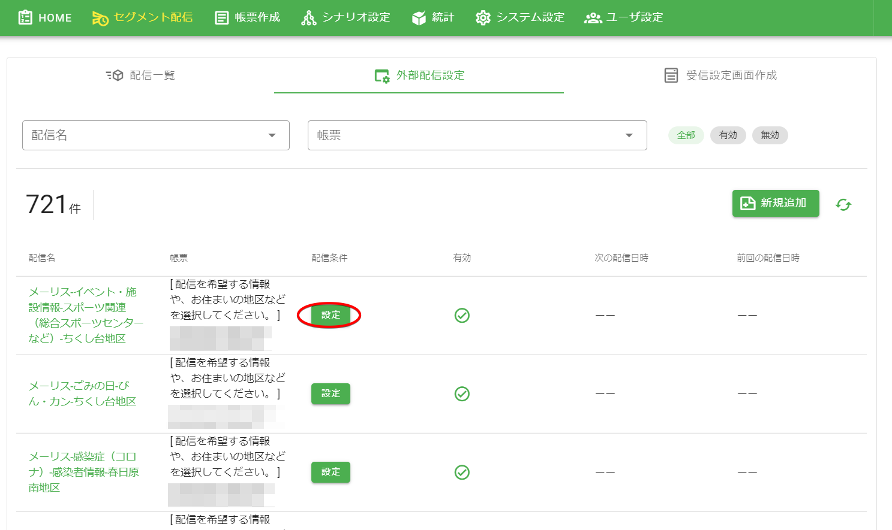
- 「本文変更条件」をクリックしてください。

- 「本文変更条件」に正規表現を記入してください。
- 例として下5行を消す正規表現を記入しています。
- 「テスト」に記入後、「変更」をクリックしていただけると本文が変更できているかチェックができます。

- 「保存」をクリックしていただけると本文変更条件が設定されます。

外部配信設定(防災新規作成)
外部配信設定にて災害モードに切り替えるための新規作成する方法を説明します。
- 「セグメント配信」＞「外部配信設定」＞「防災新規作成」の順でクリックしてください。

- 「配信名」、「有効」を選択・記入してください。

- 「保存」をクリックしていただけると災害モードに切り替えるための外部配信設定が新規作成されます。

帳票作成
帳票一覧
作成した帳票一覧を見る方法を説明します。
- 「帳票作成」をクリックすると、作成した帳票の数が分かります。またフィルタ検索や並び替えで帳票を検索することが可能です。

新しい帳票を作成
入力フォームの新規作成について記します。
- 「帳票作成」＞「新しいフォームの作成」＞「空白」をクリックすると、空の入力フォームを生成します。

- 記入項目を埋めていきます。
- アンケートのタイトルとアンケートの説明を記入します。
- 質問内容を記入します。
- 記述式を選択すると、回答させたい項目に応じてフォーマットの指定が可能です。
- ラジオボタン、チェックボックス、プルダウン、サジェストを選択できます。サジェストは、プルダウン式形式で文字検索ができるものです。

- 記入項目を埋めていきます。
- 日付選択は画像のようにカレンダーを表示させることができます。
- 説明文を選択すると、間に説明文を入れて区切ることができます。
- グループヘッダを選択すると、質問項目等をグループ分けすることができます。

- ・「質問を追加」で質問を追加することができます。 ・「プレビュー」をクリックすると携帯画面でのイメージを確認することができます。

新しい帳票を作成(配信設定)
配信設定やご連絡フォームなどテンプレートを用意しています。サンプルで入力されている内容を編集して利用が可能です。
- 「帳票作成」＞「配信設定」の順にクリックすると、メールマガジン配信設定が可能になります。

- 情報区分を編集できます。

- 地区選択・年代・性別を編集できます。

- 最後に帳票登録をクリックします。

新しい帳票を作成(ご連絡フォーム)
テンプレートを利用したご連絡フォームの作成について説明します。
- 「帳票作成」＞「ご連絡フォーム」の順にクリックすると、ご連絡フォームのテンプレートが表示されます。

- タイトル・説明文を編集することができます。
- 記述式・ラジオボタン・チェックボックスなど選択できます。

- 名(ファーストネーム)・名前・メールアドレス・電話・メッセージをテンプレートとしてご用意しています。
- それぞれ内容の編集・削除が可能です。
- 必須項目への設定が可能です。

- 「プレビュー」をクリックすると、携帯画面のイメージを見ることができます。

新しい帳票を作成(調査)
テンプレートを利用した調査フォームの作成について説明します。
- 「帳票作成」＞「調査」の順にクリックすると、調査フォームのテンプレートが表示されます。

- タイトル・内容の編集ができます。
- 記述式・ラジオボタン・チェックボックスなど選択できます。

3.「居住形態」をクリックすると内容の編集が可能です。 - タイトルの編集ができます。 - 選択肢の追加が可能です。 - 選択肢の削除が可能です。

4.「ご意見・ご要望」をクリックすると内容の編集が可能です。 - タイトルの編集が可能です。 - 説明文の編集が可能です。 - 最後にページ上の「帳票登録」をクリックします。

編集
帳票の編集方法を説明します。
- 「帳票作成」を選択し、編集したい帳票をクリックします。

- 「帳票編集モード」になるので、編集したい箇所を書き換え「帳票更新」を選択します。

- TOP画面「帳票作成」を選択し、「無効」をクリックすると帳票が使えなくなります。

LIFF・webを開く
LIFF・webを開く方法を説明します。
- 「帳票作成」から、各アンケートの一番右にある点をクリックし「LIFF・WEBを開く」を選択します。

- LINEのログイン画面にうつるのでログインします。 ※2回目以降はログインの必要はありません。

- Web上でLIFFの画面を確認することができます。

帳票一覧を無効
作成した帳票一覧を見を無効にする方法を説明します。
- 「帳票作成」から、各アンケートの一番右にある点をクリックし「無効にする」を選択します。（有効にする場合も同様になります。） ※帳票を無効にしても有効時に定期配信等で既に配信設定をしている内容は配信されます。 ※配信を停止したい場合はセグメント配信から配信内容を削除してください。

追加型帳票
追加型帳票の作成の仕方を説明します。追加型帳票は、1つの帳票に対して何度も回答することが可能で回答内容が上書きされません。
- 「帳票作成」＞「新しいフォームの作成」＞「空白」をクリックすると、空の入力フォームを生成します。

- 「追加型」に切り替えます。

- タイトルの編集、質問内容の記入、記入形式を選択し帳票を作成します。

- プレビューで確認ができます。最後に「帳票登録」をクリックすると作成が完了します。

シナリオ設定
TOP画面
メインメニュー「シナリオ設定」をクリックし、本番、ボックスのシナリオを設定します。 ※実際のシナリオや画面を作成するには、別ツール「LINE Bot Designer」で作成します。
- 本番環境のシナリオ設定箇所になります。
- 有効バージョン：現在の有効バージョン情報が表示されます。
- バージョン：プルダウンから反映したバージョンを選択します。
- 有効にする：バージョン変更後、クリックすると選択したバージョンが有効になります。
- 全体構成：クリックすると、シナリオ全体構成が表示されます。詳細は「3.」を参照ください。
- エクスポート(LBD形式)：クリックするとシナリオデータ(LBDファイル)をダウンロードします。

- サンドボックスは、テスト環境のシナリオ設定箇所になります。テスト環境でシナリオデータをインポートして、動作確認をした後に本番環境で有効にします。
- 有効バージョン：現在の有効バージョン情報が表示されます。
- バージョン：プルダウンから反映したバージョンを選択します。
- 有効にする：バージョン変更後、クリックすると選択したバージョンが有効になります。
- 全体構成：クリックすると、シナリオ全体構成が表示されます。詳細は「3.」を参照ください。
- エクスポート(LBD形式)：クリックするとシナリオデータ(LBDファイル)をダウンロードします。
- 編集：クリックすると編集画面が開きます。詳細は別途、編集の章を参照ください。
- インポート：クリックするとインポート画面が表示されます。詳細は「4.」を参照ください。
- 削除：選択されているシナリオデータを削除します。

- 「全体構成」をクリックすると全体構成の画面が表示されます。

- 「インポート」をクリックするとインポート画面が表示されます。
- クリップボタン：でインポートしたいシナリオデータ(LBDファイル)を選択します。
- シナリオ：選択したシナリオデータのシナリオ名が表示されます。
- バージョン：選択したシナリオのバージョン情報が表示されます。
- 有効にする：有効にする場合はチェックを付けます。
- OKボタン：シナリオデータがインポートされます。
- キャンセルボタン：インポート処理をキャンセルして閉じます。

編集(ゴミ分別)
TOP画面から「編集」をクリックすると編集画面が表示されます。 ここでは、ゴミ分別の編集について記載します。 ゴミ分別は基本CSVデータで管理をしてインポートにより本システムへ投入します。
- 「トーク名」のプルダウンから「ゴミ分別」を選択します。

- 「クリップマーク」をクリックし、CSVインポートデータを指定して、「OK」をクリックしてデータをインポートします。 「キャンセル」をクリックすると処理は中断して画面が閉じます。

- 「属性編集」をクリックすると編集することができます。 編集することは可能ですが、内部ID（メッセージID）で管理しているため、実際はCSVデータで管理することをお勧めします。 ※CSVデータで管理する場合はこちらの編集は不要です。
編集(ゴミ出し)
TOP画面から「編集」をクリックすると編集画面が表示されます。 ここでは、ゴミ出しの編集について記載します。 ゴミ出しは基本LINE Bot Designer(LBD形式)で作成します。
- 「トーク名」のプルダウンから「ゴミ出し」を選択します。

- 「属性編集」をクリックと編集することができます。「保存」をクリックすると設定が保存されます。「キャンセル」をクリックすると処理は中断して閉じます。 各設定項目について、下記に記載します。
- メッセージID：各メッセージ単位の内部IDです。
- プレビュー：設定した内容がプレビューで表示されます。
- 名前：メッセージ名を設定します。
- 画像タイプ：画像あり/なしを設定します。
- タイトル：タイトル名を設定します。
- テキスト：本文を設定します。
- アクション数：アクションの数を設定します。
- アクション１，２、、：アクション数で決めた分アクション設定が可能です。
- タイプ：メッセージアクション、URIアクション、ポストバックアクション、日時ピッカーアクションを選択します。
- メッセージアクション(ラベル)：LINEで表示するラベル名を設定します。
- メッセージアクション(テキスト)：次のアクションのテキスト名を設定します。
- URIアクション(ラベル)：LINEで表示するラベル名を設定します。
- URIアクション(URL)：選択したときの遷移先のURLを設定します。
- ポストバックアクション(ラベル)：LINEで表示するラベル名を設定します。
- ポストバックアクション(テキスト)：LINEで回答するテキスト名を設定します。
- ポストバックアクション(データ)：次のアクションするデータを設定します。
- 日時ピッカーアクション：現バージョンでは利用できない機能となります。
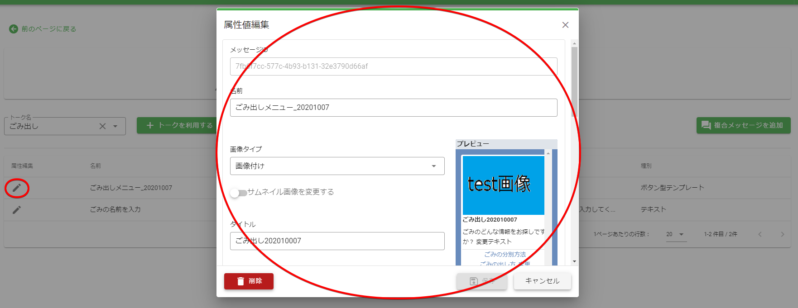
編集(損傷報告)
TOP画面から「編集」をクリックすると編集画面が表示されます。 ここでは、損傷報告の編集について記載します。 損傷報告のシナリオは固定テンプレートのためシナリオを変更することはできません。
- 「トーク名」のプルダウンから「損傷報告」を選択します。

- 「属性編集」をクリックすると編集することができます。 タイトル、テキスト、ラベルのみ変更してください。

編集(関連情報)
TOP画面から「編集」をクリックすると編集画面が表示されます。 ここでは、関連情報の編集について記載します。 関連情報は基本LINE Bot Designer(LBD形式)で作成します。
- 「トーク名」のプルダウンから「関連情報」を選択します。

- 「属性編集」をクリックと編集することができます。「保存」をクリックすると設定が保存されます。 「キャンセル」をクリックすると処理は中断して閉じます。 各設定項目について、下記に記載します。
- メッセージID：各メッセージ単位の内部IDです。
- プレビュー：設定した内容がプレビューで表示されます。
- 名前：メッセージ名を設定します。
- タイトル：タイトル名を設定します。
- テキスト：本文を設定します。
- 列の数：カルーセルの数を指定します。
- アクション数：アクションの数を設定します。
- サムネイルの画像を使用する：「はい」を選択すると各カラム毎にサムネイル画像を付けます。画像を使用する場合は、全て画像を指定する必要があります。
- アクション１，２、、：アクション数で決めた分アクション設定が可能です。
- タイプ：メッセージアクション、URIアクション、ポストバックアクション、日時ピッカーアクションを選択します。
- メッセージアクション(ラベル)：LINEで表示するラベル名を設定します。
- メッセージアクション(テキスト)：次のアクションのテキスト名を設定します。
- URIアクション(ラベル)：LINEで表示するラベル名を設定します。
- URIアクション(URL)：選択したときの遷移先のURLを設定します。
- ポストバックアクション(ラベル)：LINEで表示するラベル名を設定します。
- ポストバックアクション(テキスト)：LINEで回答するテキスト名を設定します。
- ポストバックアクション(データ)：次のアクションするデータを設定します。
- 日時ピッカーアクション：現バージョンでは利用できない機能となります。
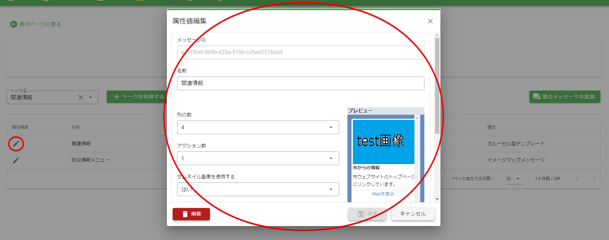
編集(リンク集)
TOP画面から「編集」をクリックすると編集画面が表示されます。 ここでは、リンク集の編集について記載します。 リンク集は基本LINE Bot Designer(LBD形式)で作成します。
- 「トーク名」のプルダウンから「リンク集」を選択します。
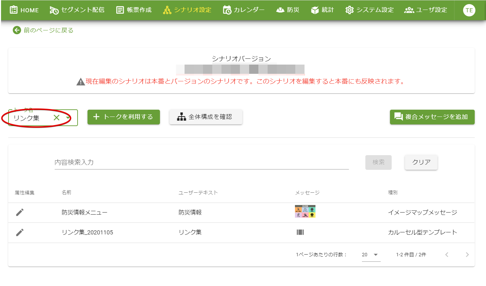
- 「属性編集」をクリックと編集することができます。「保存」をクリックすると設定が保存されます。 「キャンセル」をクリックすると処理は中断して閉じます。 各設定項目について、下記に記載します。
- メッセージID：各メッセージ単位の内部IDです。
- 名前：メッセージ名を設定します。
- プレビュー：設定した内容がプレビューで表示されます。
- 列の数：カルーセルの数を指定します。
- アクション数：アクションの数を設定します。
- サムネイルの画像を使用する：「はい」を選択すると各カラム毎にサムネイル画像を付けます。画像を使用する場合は、全て画像を指定する必要があります。
- タイトルを使用する：「はい」を選択すると、タイトルの設定が可能になります。
- カラム１，２、、：列の数で決めた分のカルーセルの設定が可能になります。
- アクション１，２、、：アクション数で決めた分アクション設定が可能になります。
- タイトル：タイトル名を設定します。
- テキスト：本文を設定します。
- タイプ：メッセージアクション、URIアクション、ポストバックアクション、日時ピッカーアクションを選択します。
- メッセージアクション(ラベル)：LINEで表示するラベル名を設定します。
- メッセージアクション(テキスト)：次のアクションのテキスト名を設定します。
- URIアクション(ラベル)：LINEで表示するラベル名を設定します。
- URIアクション(URL)：選択したときの遷移先のURLを設定します。
- ポストバックアクション(ラベル)：LINEで表示するラベル名を設定します。
- ポストバックアクション(テキスト)：LINEで回答するテキスト名を設定します。
- ポストバックアクション(データ)：次のアクションするデータを設定します。
- 日時ピッカーアクション：現バージョンでは利用できない機能となります。
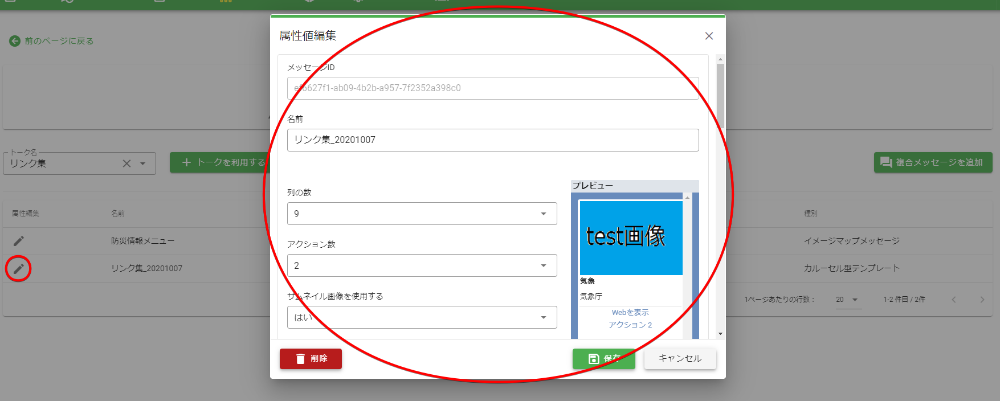
編集(ハザードマップ)
TOP画面から「編集」をクリックすると編集画面が表示されます。 ここでは、リンク集の編集について記載します。 ハザードマップは基本LINE Bot Designer(LBD形式)で作成します。
- 「トーク名」のプルダウンから「ハザードマップ」を選択します。
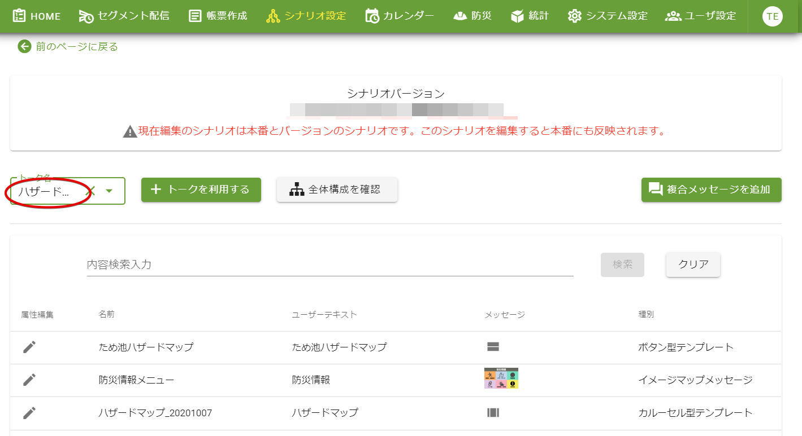
- 「属性編集」をクリックと編集することができます。「保存」をクリックすると設定が保存されます。 「キャンセル」をクリックすると処理は中断して閉じます。 各設定項目について、下記に記載します。
- メッセージID：各メッセージ単位の内部IDです。
- 名前：メッセージ名を設定します。
- プレビュー：設定した内容がプレビューで表示されます。
- 列の数：カルーセルの数を指定します。
- アクション数：アクションの数を設定します。
- サムネイルの画像を使用する：「はい」を選択すると各カラム毎にサムネイル画像を付けます。画像を使用する場合は、全て画像を指定する必要があります。
- タイトルを使用する：「はい」を選択すると、タイトルの設定が可能になります。
- カラム１，２、、：列の数で決めた分のカルーセルの設定が可能になります。
- アクション１，２、、：アクション数で決めた分アクション設定が可能になります。
- タイトル：タイトル名を設定します。
- テキスト：本文を設定します。
- タイプ：メッセージアクション、URIアクション、ポストバックアクション、日時ピッカーアクションを選択します。
- メッセージアクション(ラベル)：LINEで表示するラベル名を設定します。
- メッセージアクション(テキスト)：次のアクションのテキスト名を設定します。
- URIアクション(ラベル)：LINEで表示するラベル名を設定します。
- URIアクション(URL)：選択したときの遷移先のURLを設定します。
- ポストバックアクション(ラベル)：LINEで表示するラベル名を設定します。
- ポストバックアクション(テキスト)：LINEで回答するテキスト名を設定します。
- ポストバックアクション(データ)：次のアクションするデータを設定します。
- 日時ピッカーアクション：現バージョンでは利用できない機能となります。
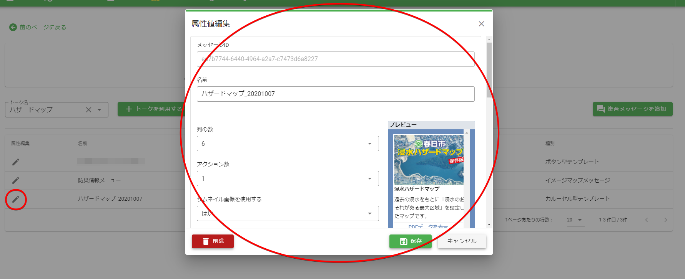
編集(トークを利用する)
TOP画面から「編集」をクリックすると編集画面が表示されます。 ここでは、特別なシナリオトークの利用方法について記載します。 特別なシナリオには損傷報告、ゴミ分別があり基本的なシナリオは決まっています。
- 「トークを利用する」をクリックすると、特別なシナリオトークの利用画面が表示されます。有効になっているシナリオにはチェックマークが付きます。
- 損傷報告
- 作成：クリックすると損傷報告シナリオが作成されます。
- 無効にする：クリックすると損傷報告シナリオが無効になります。
- 削除：クリックすると損傷報告シナリオが削除されます。
- ゴミ分別
- 作成：クリックするとゴミ分別シナリオが作成されます。
- 削除：クリックするとゴミ分別シナリオが削除されます。
- キャンセル：クリックすると特別なシナリオトークの利用画面が閉じます。

編集(複合メッセージを追加)
TOP画面から「編集」をクリックすると編集画面が表示されます。 ここでは、複合メッセージを追加の利用方法について記載します。 各トーク名にあるデータを複合して表示することができます。
- 「複合メッセージを追加」をクリックすると、複合メッセージ画面が表示されます。 メッセージは最大5つまで選択することが可能です。
- 名前：複合メッセージ名を入力します。
- トーク名：プルダウンから選択するトーク名でメッセージを絞り込んで表示します。
- 各メッセージ：メッセージ一覧が表示されます。これから利用するメッセージを選択します。（最大5つまで選択可能）
- 追加：クリックすると設定した複合メッセージが追加されます。
- キャンセル：処理を中断して、複合メッセージ画面が閉じます。

編集(防災)
TOP画面から「編集」をクリックすると編集画面が表示されます。 ここでは、リンク集の編集について記載します。 リンク集は基本LINE Bot Designer(LBD形式)で作成します。
- 「トーク名」のプルダウンから「防災」を選択します。

- 「属性編集」をクリックと編集することができます。「保存」をクリックすると設定が保存されます。 「キャンセル」をクリックすると処理は中断して閉じます。 各設定項目について、下記に記載します。
- メッセージID：各メッセージ単位の内部IDです。
- 名前：メッセージ名を設定します。
- プレビュー：設定した内容がプレビューで表示されます。
- アクション数：アクションの数を設定します。
- アクション１，２、、：アクション数で決めた分アクション設定が可能になります。
- タイトル：タイトル名を設定します。
- テキスト：本文を設定します。
- タイプ：「防災」では変更・設定はできません。
- メッセージアクション(ラベル)：LINEで表示するラベル名を設定します。
- メッセージアクション(テキスト)：次のアクションのテキスト名を設定します。
- URIアクション(ラベル)：LINEで表示するラベル名を設定します。
- URIアクション(URL)：選択したときの遷移先のURLを設定します。
- ポストバックアクション(ラベル)：LINEで表示するラベル名を設定します。
- ポストバックアクション(テキスト)：LINEで回答するテキスト名を設定します。
- ポストバックアクション(データ)：次のアクションするデータを設定します。

シナリオの検索
シナリオ編集画面で、検索機能を搭載しました。
- 編集画面の「内容検索を入力」を書かれた部分に検索したい言葉を入力し、「検索」ボタンを押下します。

- 文字を投入すると検索します。

リッチメニューの作成と編集
シナリオ編集画面からリッチメニューの作成、修正、削除が行えるようになりました。
- 編集画面の「内容検索を入力」を書かれた部分に検索したい言葉を入力し、「検索」ボタンを押下します。

- 作成をするときは「リッチメニュー作成」を押下します。

- 項目を入力し、「保存」を押下します。

- 登録すると一覧に表示されます。画面左上の数字は、登録されているリッチメニュー数です。右上部の「検索」に文字を入力すると、リッチメニューのタイトルの中からマッチするものを表示します。画像の左のアイコンを押下すると3の画面が開き、修正できます。各アイコンを押下すると色がつき、それぞれ「通常モード」「災害時モード」に切り替えることができます。また、ごみ箱アイコンを押下すると作成したメニューを削除します。

あいまい検索
ごみ検索のあいまい検索を搭載しました。
- トークルームより、検索したい言葉を入力します。

- 文字を投入すると検索します。

- 小文字で入力したり、カタカナで入力しても検索できます。

カレンダー
トップ画面と初期設定
カレンダーの設定方法を説明します。
- 大分類、中分類、小分類で入力した値で「検索ボタン」を押すと検索し結果が一覧に表示されます。
- システム設定のカレンダー設定で設定したカレンダー名、大分類名、中分類名、小分類名が表示されます。

- はじめての場合はカレンダーが登録されていないので、「一括登録」ボタンを押してカレンダーCSVデータをインポートします。

- 「ファイルを選択」ボタンを押して、カンレダーCSVデータを選択し、「開く」ボタンを押すとカレンダーがインポートされます。

- カレンダーにインポートするCSVの形式は下記となります。
- 1行目1列目に”#”固定にします。
- 1行目2列目以降に連続した日付を設定します。
- 2列目2行目以降に連続した30分単位の時間帯を設定します。（8:30～16:30固定）
- 日付・時間帯毎に空き枠数（予約可能数）を設定します。

空き枠数の変更
カレンダーの空き枠数の変更方法を説明します。カレンダーデータをインポートしていない場合は「トップ画面」を参照ください。
- 大分類、中分類、小分類を選択して「検索ボタン」を押すとカレンダー一覧が表示されます。
- カレンダーには「予約数／空き枠数」が表示されます。
- 予約数は、LINEから予約された数が表示されます。
- 予約は3日目から予約可能となります。（例：本日が12/1の場合、12/1、12/2、12/3は予約できず12/4から予約可能となります）
- 予約変更機能は未実装のため、予約登録された日は、予約枠の変更はできません。
- 過去の予約枠数の変更はできません。
- 「次の週」ボタンを押すと次週のカレンダーが表示されます。
- 「前の週」ボタンを押すと前の週のカレンダーが表示されます。
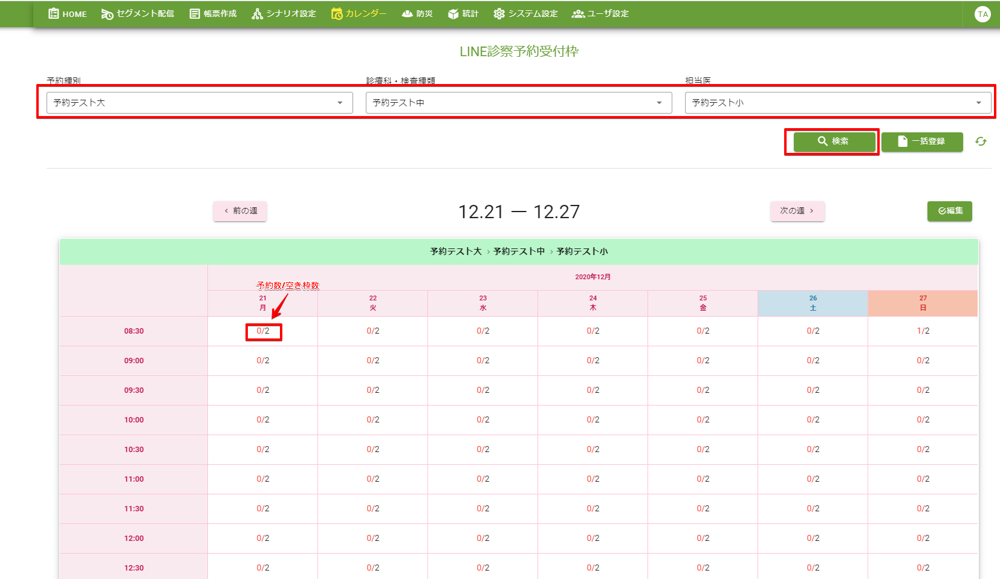
- 「編集」ボタンを押すと、空き数の変更が可能です。空き枠数の変更後「保存」ボタンを押すと変更が保存されます。
- 予約空き数の最大は99までとなります。
- 週単位での保存のため、他の週を変更したい場合は、一度保存してから他の週へ移動してください。
- 大中小分類単位でカレンダーは管理されているため、他の分類に移動する場合は一度保存してから他の分類へ移動してください。
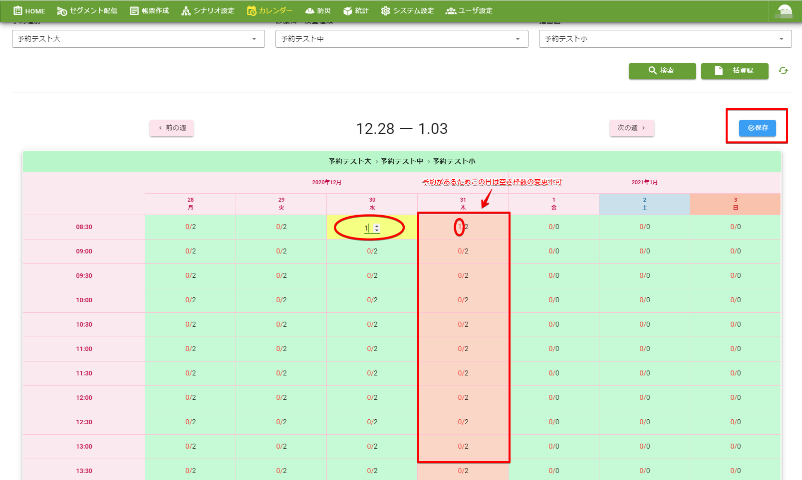
予約帳票の作り方1
カレンダーの帳票作成までの流れを説明します。
- 帳票作成時に下記の設定が必要となります。
- 追加型にします。
- 記述式に分類を設定します。こちらの分類単位で予約管理します。
- 記述式にカレンダーボタンを設定します。こちらのボタンを設定することによりカレンダー画面へ遷移します。
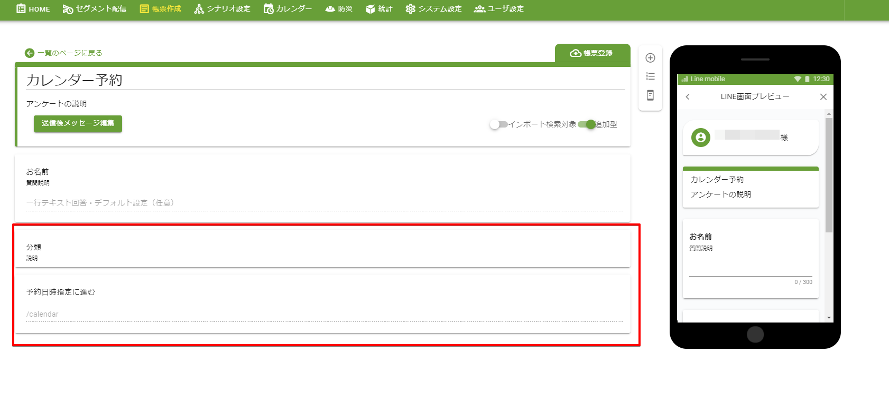
- LINE側で帳票を開くと、分類を設定して、カレンダーボタン「予約日時指定に進む」が表示されます。
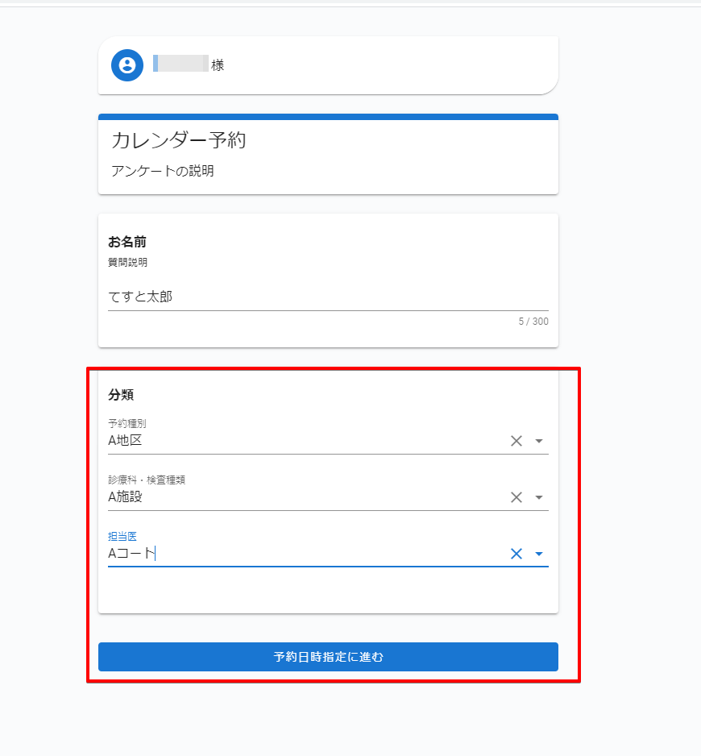
- カレンダーが表示され、管理画面で設定した予約できる日時が〇で表示されます。予約できない場合は✕で表示されます。予約したい日時を選択し「日付確定」ボタンを押します。
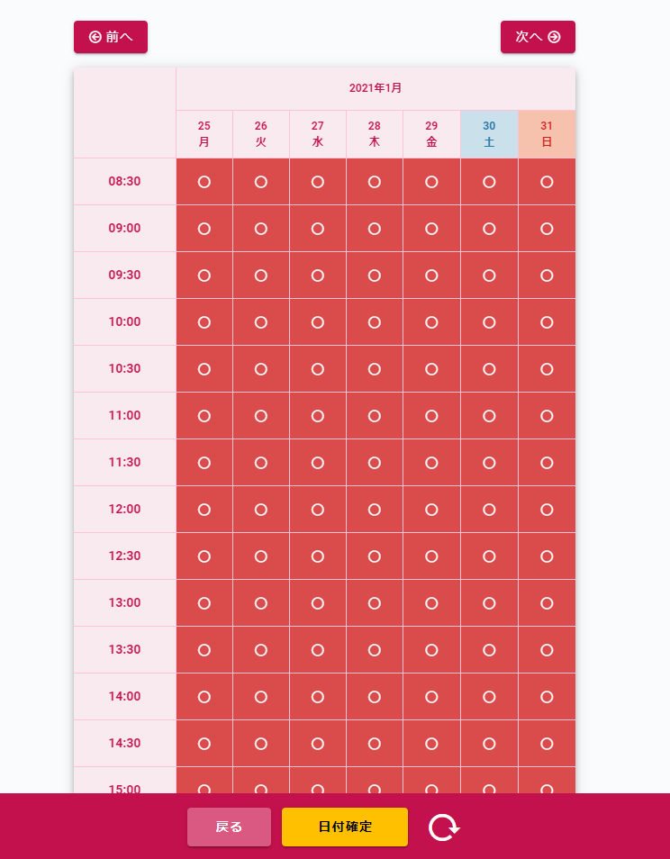
- 確認画面が表示されますので、「はい」を選択すると次の画面へ遷移します。 キャンセルする場合は「いいえ」を押すとカレンダー画面へ戻ります。
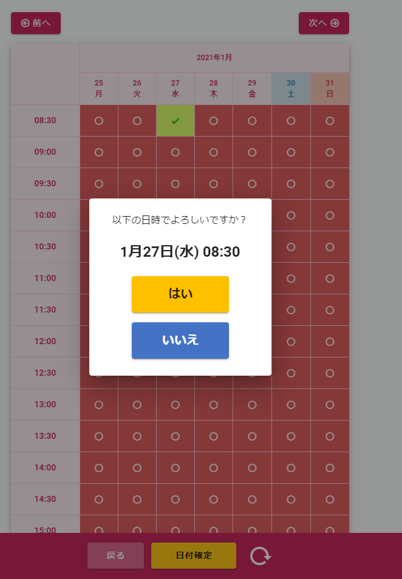
予約帳票の作り方2
カレンダーの帳票作成までの流れを説明します。
- 予約確認画面が表示されます。「予約確定」ボタンを押すと予約が確定されます。
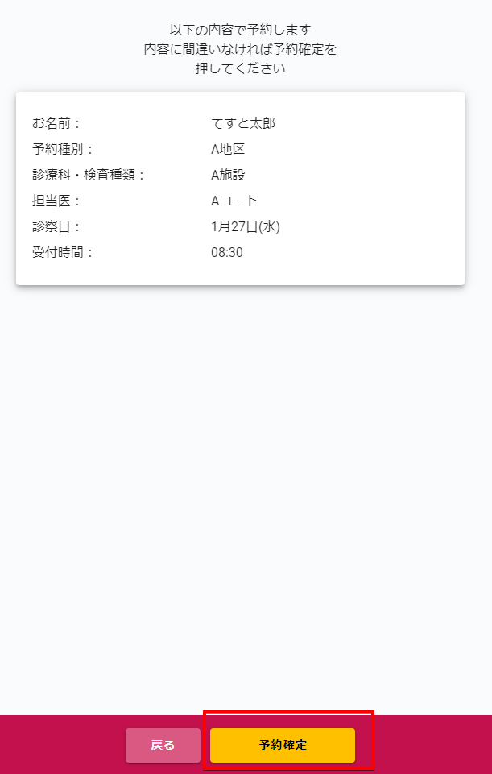
- 予約完了画面が表示されますので、ウィンドウを閉じます。
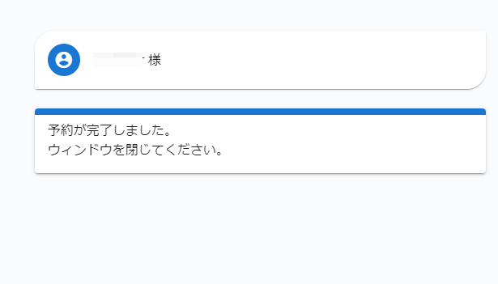
防災
モード切替
防災モードへの切り替え方法を説明します。
- 「防災」＞「モード切替」の順でクリックします。

- 本番環境かサンドボックス、どちらの環境でモードを変えたいのか選択します。現在のモードが防災モードなのか通常モードなのかを確認します。

- 現在のモードが通常モードで防災モードに変更したい場合、「有効にする」を選択します。

登録施設(施設一覧・検索・ダウンロード)
登録施設の一覧と詳細検索の方法、ダウンロード方法について説明します。
- 「防災」＞「登録施設」＞「施設一覧」の順にクリックすると、施設の一覧を見ることができます。

- 「詳細条件」をクリックすると、検索項目が出てきます。下記条件で絞り込みが可能で、選択した後、下部の「検索」をクリックします。 ・フリーワード検索 ・情報公開可否 ・ネットワーク環境の有無 ・各携帯キャリアの電波状況等 ・COVID-19対応備蓄設備の有無

- 「CSV出力」をクリックすると、登録施設一覧のダウンロードが可能です。

登録施設(施設一覧・ステータス変更)
避難所のステータス変更の方法について説明します。
- 「防災」＞「登録施設」＞「施設一覧」をクリックし、ステータス変更をしたい施設を選択します。

- 「ステータス変更」をクリックします。

- 「ステータス」からプルダウンで「未開設・開設・満」を選択できます。

登録施設(施設一覧・施設登録)
施設登録の方法を説明します。
- 「防災」＞「登録施設」＞「施設一覧」＞「＋施設登録」の順でクリックします。

- ファイルを選択し、「登録する」を押すと上書きされます。

- 上記に登録する際のサンプルファイルについて説明します。 ・避難先名称(避難所・避難場所)：正式名称で記載 ・避難先名称(かな)：よみがなを記入 ・住所：マンションやアパート名等まで含める ・緯度：北緯2桁＋小数点以下5桁以上 ・経度：東経3桁＋小数点以下5桁以上 ・電話番号：避難施設の電話番号(ハイフンなし11桁) ・避難所種別：避難所／避難場所等の種類の区分。避難所の種別をフラグで記載(複数選択可) 1：避難場所 2：臨時避難所 3：避難所を兼ねる避難場所 4：広域避難場所：開設措置なし 5：一時避難場所：開設措置なし 9：福祉避難所 ・災害種別：当該避難（場）所の対応している災害種別。本項目で選択した災害種別の発災時避難先として使用可能。 【選択式（択複）】 １：洪水（風水害） ２：崖崩れ、土石流及び地滑り ３：高潮 ４：地震 ５：津波 ６：大規模な火事 ７：内水氾濫 ８：火山現象 ・情報入力者メールアドレス ・ID1(団体コード)：全国地方公共団体コード。発災時は郵便番号・住所から自動入力 ・ＩＤ2(避難所の通し番号)：避難所毎に付与されているID。各市区町村における通し番号を記載。

- サンプルファイルの続きを説明します。 ・情報公開可否：本避難先情報の一般公開可否。ある場合は〇 ・最終更新日：避難所情報を最後に更新した日時。yyyy/MM/dd HH:mm ・施設面積（㎡）/ 屋外：校庭・公園等の面積。面積を整数で（約は不要）。 ・施設面積（㎡）/ 屋内：延床面積。面積を整数で（約は不要）。 ・想定収容人数：収容可能人数 ／ 避難所定員 ／ 最大の収容人数 。整数。 ・コロナ想定収容人数：COVID-19をふまえた収容可能人数 ／ 避難所定員 ／ 最大の収容人数。整数。 ・ネットワーク環境の有無：Wi-Fi等が存在するか。携帯の電波が入るか。避難者に開放可能な無線LANがある場合は〇 ・各携帯キャリアの電波状況等：携帯の電波が入るか。主要キャリア3社が入る場合は〇 ・隔離可能場所の有無：感染症患者／濃厚接触者の発生時に当該施設内で隔離対応可能か。隔離可能場所が用意可能かどうかフラグで記載。。 1：隔離場所を用意可能 2：隔離場所を用意可能でない 0：不明 ・COVID-19対応備蓄設備の有無：コロナ関連の機材・備品等の準備。ダンボールパーティション、体温計、マスク、アルコール消毒液 等ある場合は〇

登録施設(施設一覧・削除)
登録施設を削除する方法を説明します。
- 「防災」＞「登録施設」＞「施設一覧」をクリックし、削除したい施設にチェックを入れます。

- 「削除」をクリックします。「全削除」を押すと、すべての施設が削除されます。

登録施設(施設設定)
登録施設設定にて避難所の検索範囲を指定する方法を説明します。
- 「防災」＞「登録施設」＞「施設設定」をクリックし、施設設定画面を表示します。

- 「防災検索範囲」で、検索できる避難所の範囲を設定できます。また、「未開設の施設を表示しない」をONにすると、施設一覧画面で未開設の施設を検索対象から外すことができます。

- 「保存」をクリックします。
統計
LINE友だち数情報
メインメニュー「統計」から「友だち数」をクリックすると、LINE友だちの人数情報を確認できます。
- 「友だち数」から「日次」を選択後、「開始日」を指定して「表示」をクリックするを日単位で友だち数のグラフが表示されます。

- 「週次」を選択後、「開始日」を指定して「表示」をクリックするを週単位で友だち数のグラフが表示されます。

- 「週次」を選択後、「開始月」を指定して「表示」をクリックするを月単位で友だち数のグラフが表示されます。

LINE友だち属性1
メインメニュー「統計」から「友だちの属性」をクリックすると、LINEの友だちの属性情報を確認できます。
- 「年齢」をクリックすると年齢別（5歳単位）のグラフが表示されます。

- 「性別」をクリックすると性別のグラフが表示されます。

- 「エリア」をクリックするとエリア別のグラフが表示されます。

- 「OS」をクリックするとOS別のグラフが表示されます。

LINE友だち属性2
メインメニュー「統計」から「友だちの属性」をクリックすると、LINEの友だちの属性情報を確認できます。
- 「友だち期間」をクリックすると友だち登録している期間別のグラフが表示されます。

リッチメニュー
メインメニュー「統計」から「帳票」をクリックすると、リッチメニューの操作に関する集計情報が確認できます。
1.「リッチメニュー操作数」から「日次」を選択後、開始日を指定して「表示」をクリックすると、日単位でのリッチメニューのタップされた合計数の推移グラフが表示されます。

- 「週次」や「月次」を選択すると、グラフの集計単位を変更することができます。 画面下表示項目をクリックするとグラフの表示・非表示を変更することができます。

3.「リッチメニューの各ボタンタップ割合」をクリックすると、リッチメニューがタップされた割合（パーセンテージ）の円グラフが表示されます。

4.集計の開始日と終了日を指定して、集計期間を変更することができます。画面下表示項目をクリックするとグラフの表示・非表示を変更することができます。

セグメント
メインメニュー「統計」から「帳票」をクリックしセグメントの項目を表示すると、帳票で登録されたセグメントに関する集計情報が確認できます。
1.「セグメント別登録者数」をクリックすると、帳票で登録されたセグメントの登録者数が、帳票ごとの積み上げグラフとして表示されます。
- 集計の単位を「日次」「週次」「月次」で変更できます。
- 単位にあわせて集計の期間を変更できます。
- 画面下表示項目をクリックすると項目の表示・非表示を変更することができます。

2.「セグメント別配信数」をクリックすると、セグメント配信の行われた配信数が、帳票ごとの積み上げグラフとして表示されます。
- 集計の単位を「日次」「週次」「月次」で変更できます。
- 単位にあわせて集計の期間を変更できます。
- 画面下表示項目をクリックすると項目の表示・非表示を変更することができます。

3.「セグメント成功配信数」をクリックすると、セグメント配信の行われた配信数のうち配信に成功した数が、帳票ごとの積み上げグラフとして表示されます。
- 集計の単位を「日次」「週次」「月次」で変更できます。
- 単位にあわせて集計の期間を変更できます。
- 画面下表示項目をクリックすると項目の表示・非表示を変更することができます。

帳票・LIFF
メインメニュー「統計」から「帳票」をクリックしLIFFの項目を表示すると、帳票の表示数の集計情報が確認できます。
1.「LIFF別起動数」をクリックすると、アンケートや申請などの帳票の表示数が帳票別に表示されます。開始日と終了日を指定して、集計期間を変更できます。

2.対象となる帳票のグラフをクリックすると、帳票内で選択された内訳が表示されます。 画面下表示項目をクリックすると項目の表示・非表示を変更することができます。

システム設定
ロゴ画像
管理画面のロゴ画像の登録方法を記載します。
- 「システム設定」から「一般設定」をクリックします。

- ロゴ画像の画像箇所にマウスを移動します。

- 「ロゴ画像を選択」をクリックし画像を指定した後、縦サイズ、横サイズを指定します。

- 「更新」をクリックすると、管理画面に指定したロゴ画像が表示されます。

メニュースタイル
管理画面のメニュースタイルの設定方法を記載します。
- 「システム設定」から「一般設定」をクリックします。
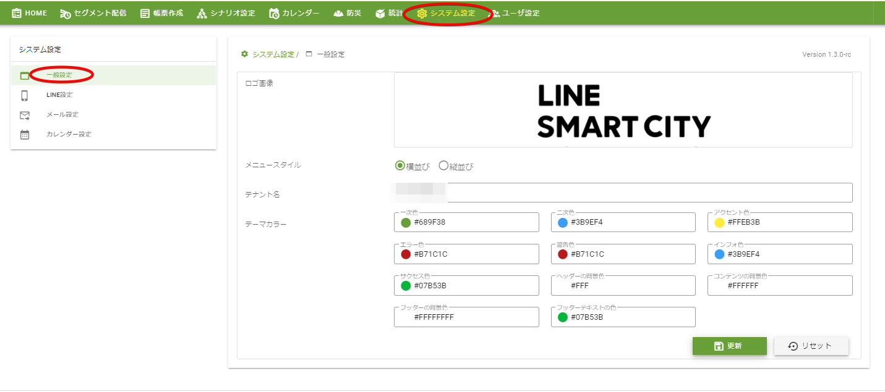
- メニュースタイルの「横並び」をクリックし、「更新」をクリックするとメニューが横に並びます。

- メニュースタイルの「縦並び」をクリックし、「更新」をクリックするとメニューが縦に並びます。

テナント名
管理画面のテナント名の設定方法を記載します。
- 「システム設定」から「一般設定」をクリックします。
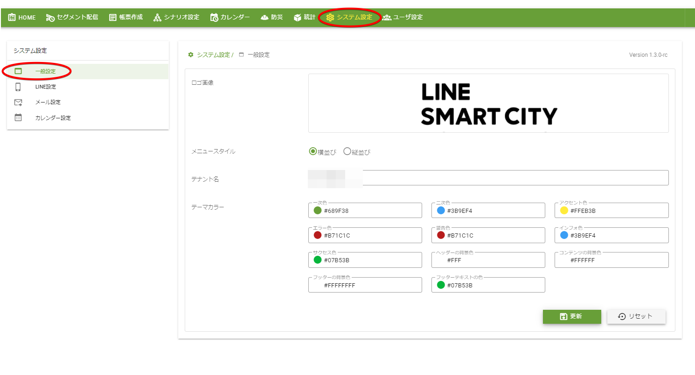
- テナント名を入力し、「保存」をクリックします。

- 入力したテナント名が表示されます。

テーマカラー
管理画面の配色の設定方法を記載します。
- 「システム設定」から「一般設定」をクリックします。「テーマカラー」項目でメニュー画面の配色を変更できます。
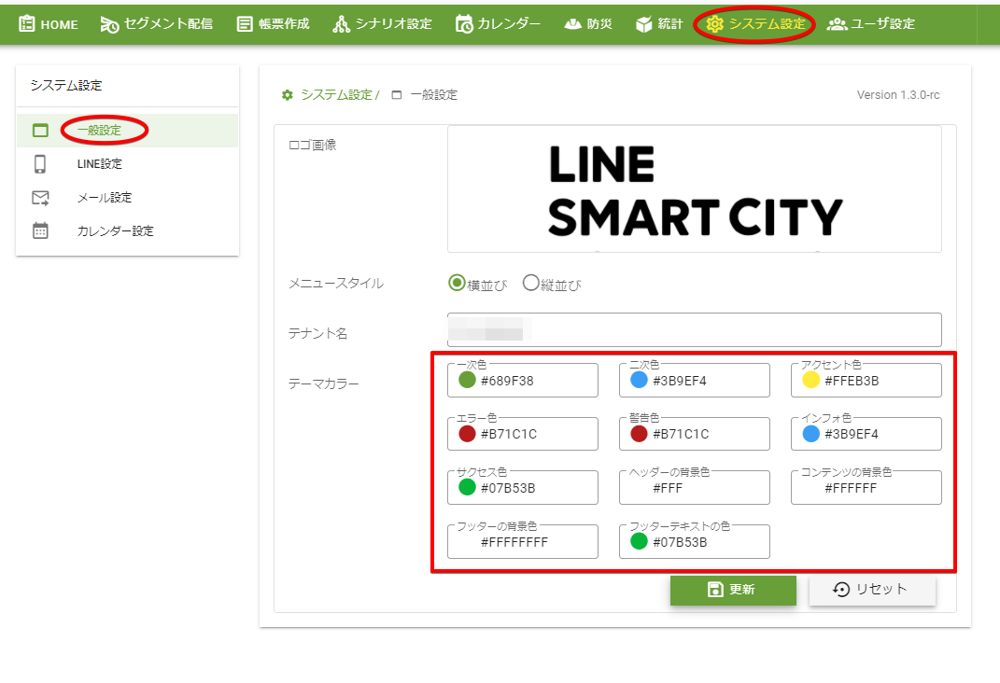
- カラーコードの指定、またはカラーピッカーから配色を指定できます。主な変更項目は以下です。
- 「一次色」：ヘッダーのメニューや設定ボタン、文字色などメインとなるカラーを指定
- 「ヘッダーの背景色」「コンテンツの背景色」「フッターの背景色」：ページの背景色を指定

LINE設定
LINE Developers で開設した Messaging API との連携設定の方法を記載します。
- 「システム設定」から「LINE設定」をクリックします。

- Messaging API の各種情報を登録します。本番とサンドボックスそれぞれに登録します。
- 「チャネルアクセストークン」：チャネル基本設定にある、チャネルアクセストークン情報を登録
- 「チャネルID」：Massaging API設定にある、チャネルID情報を登録
- 「チャネルシークレット」：チャネル基本設定にある、チャネルシークレット情報を登録
メール設定
ユーザー作成時に送信する招待メールの編集方法を記載します。
- 「システム設定」から「メール設定」をクリックします。

- 招待メールで送信される、ユーザー名と一時パスワードを通知する文面内容を編集します。初期値（英語）が設定されています。「保存」をクリックすると変更内容が確定されます。
- 「招待メールの件名」「招待メールのメッセージ」：送信される招待メールの件名（Subject）と本文（body）を変更します。
- 「{username}」：あらかじめ設定されたユーザーネームが挿入される領域です。
- 「{####}」：あらかじめ設定されたパスワードが挿入される領域です。
カレンダー設定(名称設定)
カレンダーの名称設定を説明します。
- システム設定→カレンダー設定を選択します。

- カレンダー名および大分類、中分類、小分類のタイトル名を設定します。こちらの名称がカレンダーに反映されます。
- カレンダー名：カレンダーのタイトルを入力します。
- 大分類項目名：大分類のタイトルを入力します。
- 中分類項目名：中分類のタイトルを入力します。
- 小分類項目名：小分類のタイトルを入力します。
- 「保存ボタン」を押すと設定した名称が保存されます。

カレンダー設定(分類登録・編集)
カレンダーに紐づける分類を設定します。
- 大分類、中分類、小分類で入力した値で「検索ボタン」を押すと検索し結果が一覧に表示されます。

- 「新規追加」ボタンを押すと登録画面になり、分類を登録できます。
- 大分類：大分類を入力します。
- 中分類：中分類を入力します。
- 小分類：小分類を入力します。
- 「保存ボタン」を押すと設定した名称が保存されます。「閉じる」ボタンを押すと登録せずに画面を閉じます。

- 「分類ID」を押すと編集画面になり、分類を編集できます。
- 大分類：大分類を編集します。
- 中分類：中分類を編集します。
- 小分類：小分類を編集します。
- 「保存ボタン」を押すと設定した名称が保存されます。「閉じる」ボタンを押すと編集せずに画面を閉じます。 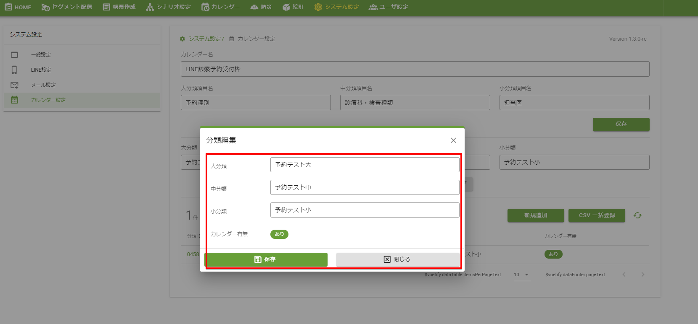
- 「CSV一括登録」を押すとCSVの分類データを一括で登録することができます。
- 「CSV一括登録」を押します。
- ファイルから登録したい分類CSVファイルを選択し、「開く」を押します。
- CSVファイルは、記入例の通り「大分類,中分類,小分類」の形式になります。小分類がない場合は、中分類までの記入で問題ありません。 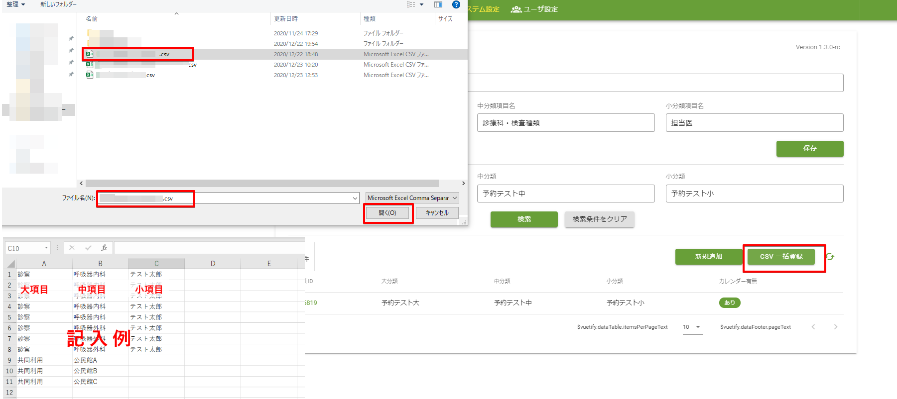
ユーザ設定
一覧とポリシー設定
登録されているユーザーやグループの一覧の確認ができます。
- ユーザ一覧
- メインメニュー「ユーザ設定」をクリックします。
- ユーザをクリックすると、ユーザ一覧が表示され登録されているユーザ情報が一覧で表示されます。

- グループ一覧
- メインメニュー「ユーザ設定」をクリックします。
- グループをクリックするとグループ一覧が表示されます。

- ポリシー設定
- ポリシー設定をクリックします。
- パスワードの最小長が設定できます。
- パスワードの強度をチェックボックスで設定できます。（複数選択可）
- 一時パスワードの有効期限が設定できます。（日数）
- 保存ボタンをクリックすると、設定した内容が保存されます。

ユーザ新規作成
ユーザの作成方法を記載します。 1. メインメニュー「ユーザ設定」から「新規作成」をクリックします。

- ユーザを新規作成します。
- ユーザ名を入力します。
- 一時パスワードを入力します。
- メールアドレスを入力します。（こちらのアドレスに招待メールが届きます）
- グループを選択します。
- 招待メールを送る場合は、「はい」を選択します。

ユーザ情報変更 (パスワード・権限)
ユーザー情報を変更したい場合は、下記手順で変更が可能です。
- 「ユーザ情報」をクリックし、変更したいユーザー名を選択します。

- 「パスワードリセット」を選択するとパスワードの変更ができます。

- 「グループに追加する」を選択すると、ユーザーをどのグループに追加するか選ぶことができます。

ユーザ削除
ユーザー情報を削除する際の手順を記載します。
- 「ユーザ設定」をクリックした後、 削除したいユーザーを選択します。
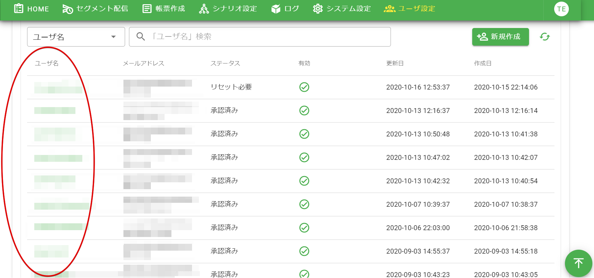
- 削除したいユーザーの詳細情報が表示されるので、画面右上の「ユーザ削除」をクリックします。

グループ編集
adminsとmembersでグループ編集をすることが可能です。必要な権限範囲に応じてグループを使い分けることがきます。adminsはすべての機能に、membersはHOME・セグメント配信・帳票作成・ログ機能に対して権限があります。
- 「ユーザ設定」＞「グループ」をクリックします。
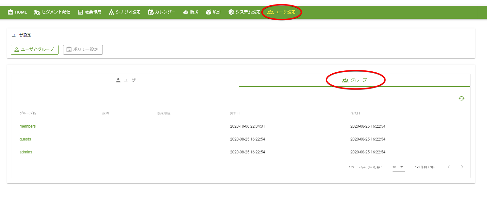
- 編集したいグループを選びます。
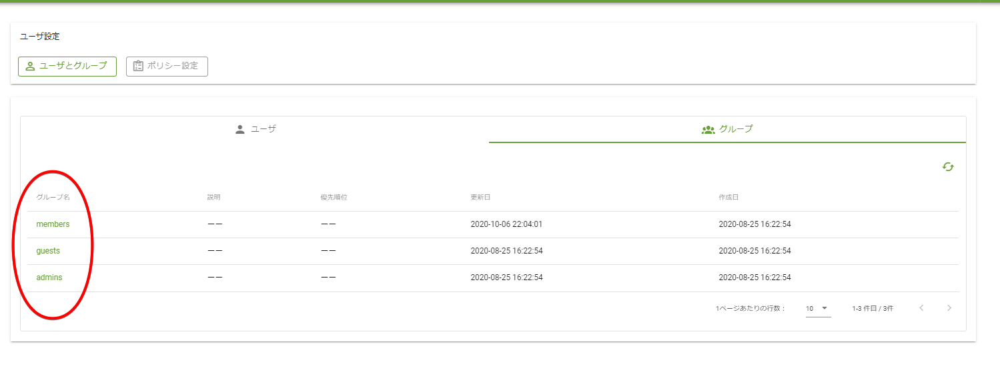
- 「ユーザを追加する」をクリックします。
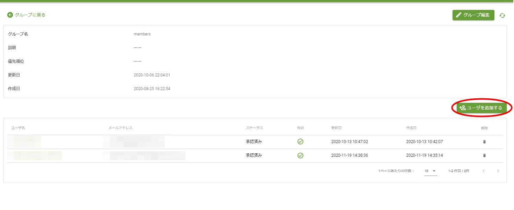
- 追加したいユーザーをクリックします。
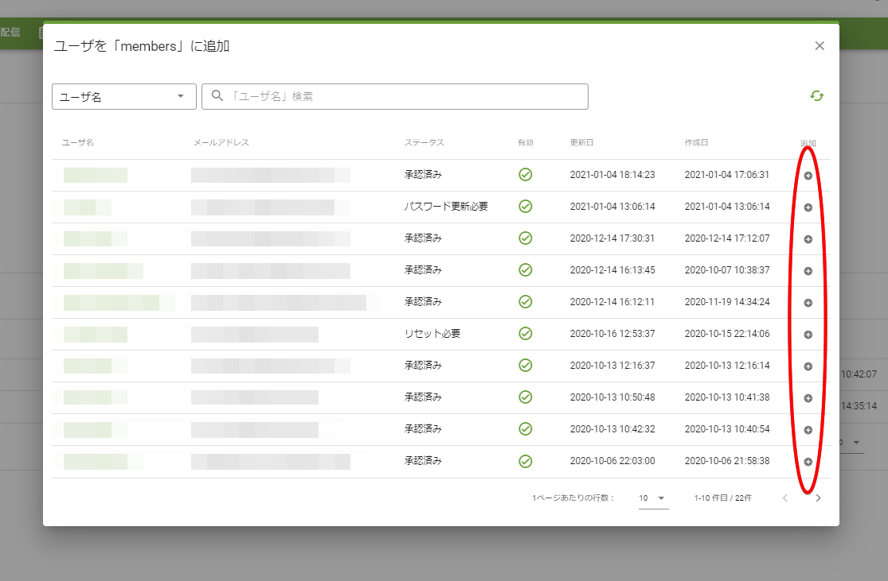
AWS設定
DNS_DOMAIN_LIFF_CERTIFICATE_ID の設定
Amazon Certificate Manager(以下、ACM)を使って証明書を発酵する方法です。
- システム設定 から “DNS_DOMAIN” の値を確認します。
- リージョンを バージニア州北部 を選択した上でACMを開き「証明書のリクエスト」をクリックします。

- 「パブリック証明書のリクエスト」を選択し、証明書をリクエストし、ドメイン名を設定します。
- *.(環境名).(DNS_DOMAINで設定した値) を設定します。

- 検証方法の選択を選択(必要に応じてタグを追加)、「確認とリクエスト」をクリックします。
- 検証後に発行される証明書の識別子を DNS_DOMAIN_LIFF_CERTIFICATE_ID として設定します。

DNS_DOMAIN_LIFF_HOSTED_ZONE_ID の設定
- システム設定 から DNS_DOMAIN の値を確認します。
- AWSコンソールから「Amazon Route53」> 「ホストゾーンの作成」を開きます。 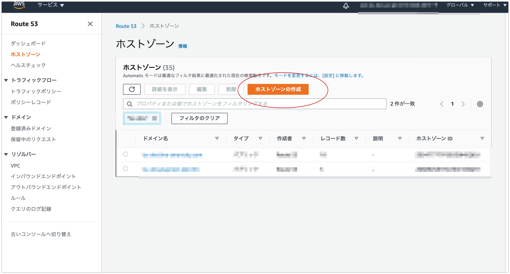
- ドメイン名として(環境名).(DNS_DOMAINで設定したドメイン名)を設定します。 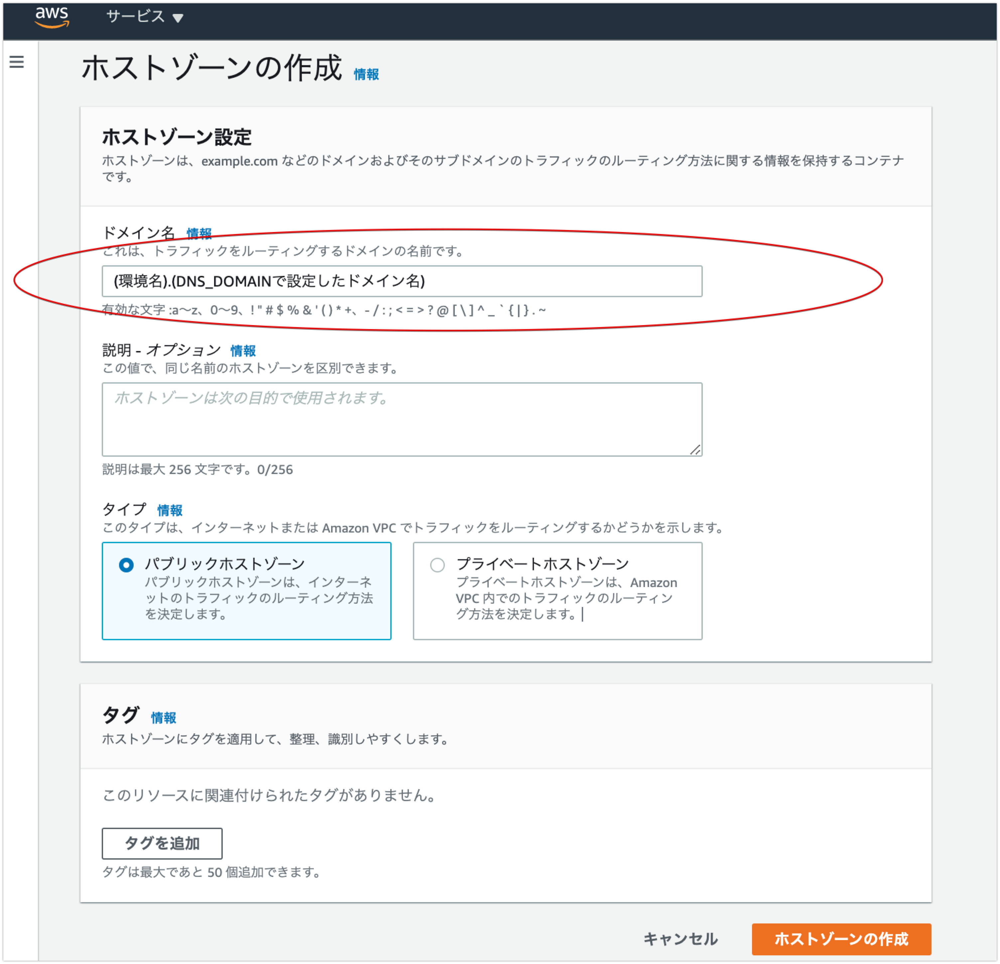
- 作成されたホストゾーンIDを管理画面の DNS_DOMAIN_LIFF_HOSTED_ZONE_ID として設定します。 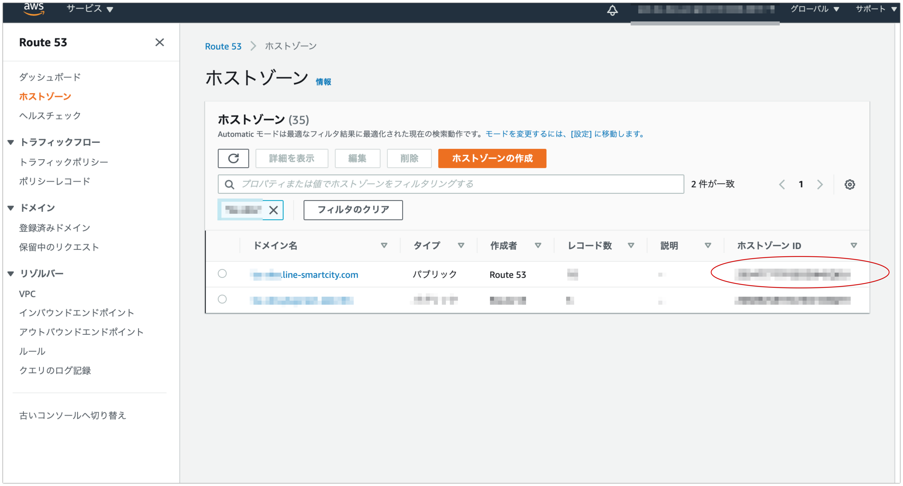
Cognitoユーザプール(LIFF)の確認
AWS Cognitoで管理される管理画面のユーザについて記します。
- 「ユーザープールの管理」＞
(環境名)-liff-users が記されたユーザープールを選択します。 
- 「IDプロバイダー」>「OpenID Connect」をクリックし、さらに最下部に表示される「プロバイダー Line」の編集のマークをクリックします。 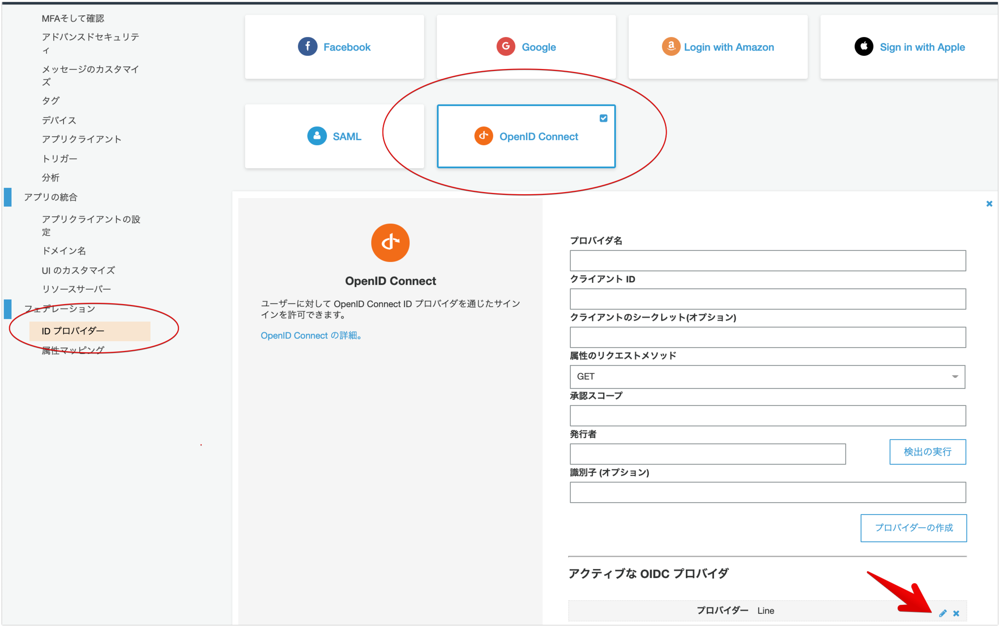
- クライアントIDにLINEログインのチャネルID、クライアントシークレットにLINEログインのチャネルシークレットが設定されていることを確認できます。 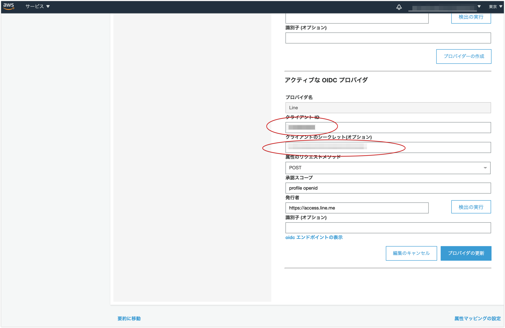
- アプリクライアントの設定で以下設定を確認します。
- 有効なIDプロバイダが Line となっていること
- コールバックURLが
https://LIFFのドメイン/login になっていること
- サインアウトURLが
https://LIFFのドメイン になっていること 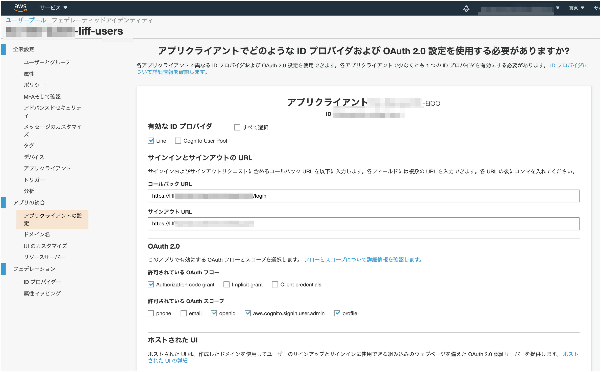
Cognitoユーザプール(管理画面)
AWS Cognitoで管理される管理画面のユーザについて記します。
- ユーザープールの管理を選択します。 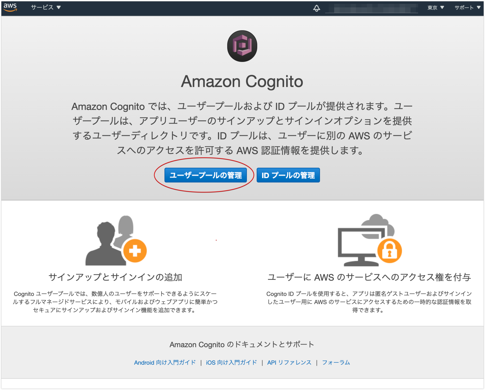
- 環境名が記されたユーザープールを選択します。
- 環境構築時および管理画面で作成されたユーザ・グループを確認できます。 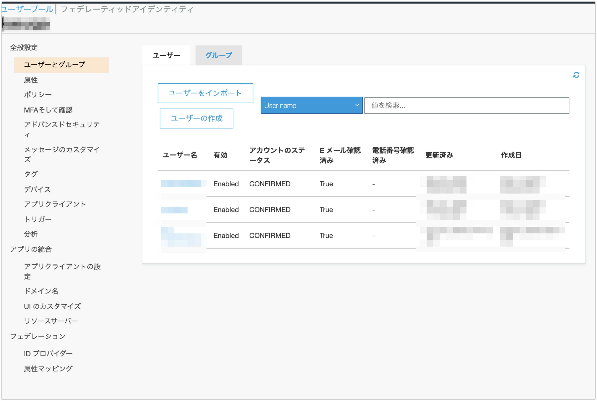
- パスワードポリシーの変更ができます。
- 変更される場合の最小長は8文字以上としてください。
- 管理画面上には設定変更後のパスワードポリシーは表示されません。 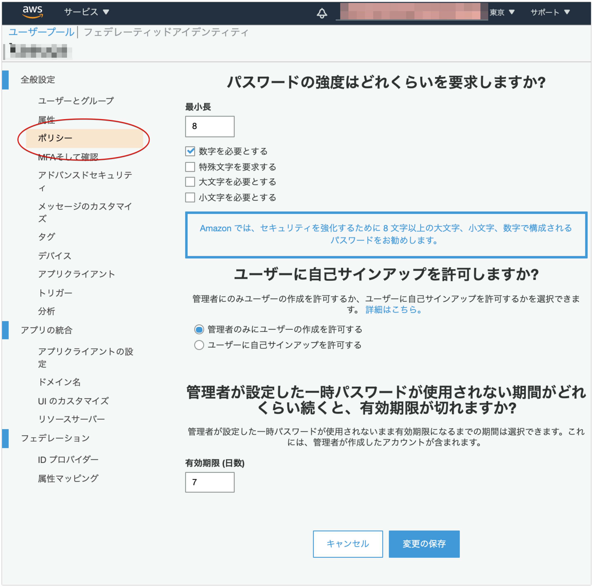
IP アドレス制限
AWS WAF の設定により IP アドレス制限ができます。
- アクセス対象とする IP アドレスを IP address に入力します。
- Region として Global(CloudFront)を選択します。
- IPv4 または IPv6 の選択はアクセス対象とする環境により異なります。

- Web ACLs をクリックします。
- 「Global(CloudFront)」が選択されていることを確認します。
- 「Create web ACL」をクリックします。

- プルダウンメニューから Add my own rules and rule groups を選択します。
- 条件にマッチしない場合に許可させないため「Block」をクリックします。

- Rule type から IP set を選択します。
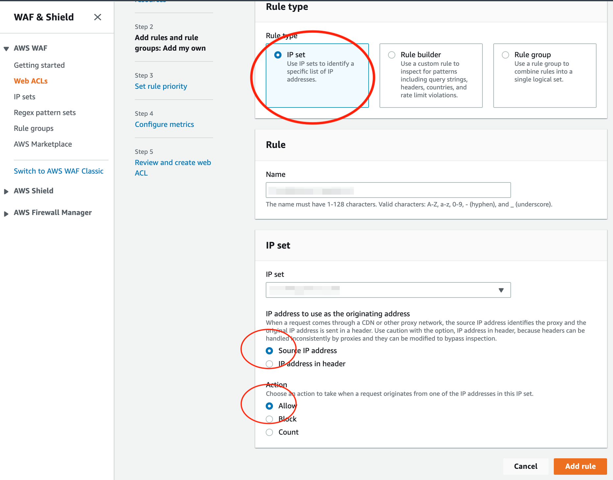
セグメント配信の受信メールアドレス設定
環境構築のコマンド実施後に Amazon SES （以下、「SES」）、Amazon SNS （以下、「SNS」）の設定を実施してください。
- リージョンとして us-west-2(オレゴン)を選択します。

- セグメント配信の受信に使用するメールアドレスを SES 設定します。

- SES と連携する SNS を開き、SNS トピック設定がなされていることを確認してください。

ワクチン運用例
事前準備(システム管理者)
権限に関するドキュメントを参照
- チームの作成

- 「ユーザー設定」タブをクリック
- 「チーム」をクリック


- 「チーム名」に作成したいチームの名前を入力
- 「権限設定」にて作成したいチームに表示を許可するタブのトグルボタンのスイッチを選択
- 「保存」ボタンをクリック
- システム実施ユーザー、グループの準備
- 「ユーザー設定」タブをクリック
- 「ユーザ」ボタンをクリック
- 「新規作成」をクリック

- 必要情報を入力
- ユーザー名：追加したいユーザーの名前
- 一時パスワード：ワンタイムパスワード
- メールアドレス：追加したいユーザーのメールアドレス
- アドミニストレータ権限：ここを「はい」にした場合、スーパーユーザー権限（全権限）が付与
- チーム：1 で作成したチームの中で、追加したいユーザーの所属チームを選択
- 権限：追加したいユーザーの操作を許可する権限を選択
- admins, members, operator, guests
- この新規ユーザに招待を送信しますか？：メールでアカウント発行通知をしたい場合は、「はい」を選択
- 予約カレンダー項目の作成

- 「カレンダー」タブをクリック
- 「カレンダー設定」ボタンをクリック
- 「大分類」、「中分類」、「小分類」に任意の分類名を入力
- ex) 大分類⇒新型コロナワクチン接種, 中分類⇒接種回数, 小分類⇒会場
- これ以上分類は出来ない
- ワクチンごとにさらに分けたい場合は小分類に入れ込む

- 「カレンダー名」に任意のカレンダー名を入力
- 「保存」ボタンをクリック

- 「分類・カテゴリ」の「サンプルCSV出力」ボタンをクリック
- エクスポートしたCSVを参考に、分類の内容を定義してインポート用のCSVファイルを作成
- ex) 大分類⇒新型コロナワクチン接種, 中分類⇒1回目, 小分類⇒XXXXXXXXXX体育館
- 「CSV一括登録」ボタンから先ほどのCSVをインポート
- カレンダーのコマ数設定と個別カレンダーの設定
- 初回設定時は、CSVファイルでカレンダーの詳細情報を登録(初期状態ではカレンダーの空き枠設定がされていないので、設定自体が不可)
- カレンダー設定画面を開いているのであれば閉じてカレンダー画面を開く。
- 次にサンプルカレンダーcsv.csvの内容を参考にインポート用のCSVを作成する。
- 「インポート」ボタンから先ほどのCSVをインポート
- カレンダーをインポートする際は最低7日間以上の情報をインポートする事。
- カレンダーCSVは、文字コードutf-8にする事。sjisには対応しておりません。
- 前提
- カレンダーは3 で定義した小項目単位で、予約可能な空き枠数を管理

- 「独立カレンダー設定」をクリック
- 「小分類」を選択(3 でCSVインポートした中から、設定対象カレンダーを選択)
- 「本日からの予約可能日」に、予約を許可したい日数を入力
- ex) 2日に設定した場合、当日含めて2日前から予約不可となる

- 間違えてカレンダーを作成した場合は対象の「大分類」、「中分類」、「小分類」を選択した後、カレンダー画面の「削除」ボタンから削除可能
- その際に、予約情報が入っている状態は削除不可
- 予約情報が既に入っている状態で削除する場合、管理画面から対象の予約キャンセルを行い、予約総数が0になった状態で削除を実施
- 予約帳票の作成

- 「帳票作成」タブをクリック
- テンプレートから「新型コロナワクチン接種予約」を選択
- 「分類」のアイテムにて、「分類固定」をONにする
- 「大分類」から、3 で作成したカレンダーの大項目で、当該帳票で利用したいカレンダーの分類を選択
- 「中分類」を編集不可
- 1回目の帳票では中分類（回数）を1回目にしておかないと、帳票とカレンダーであべこべになる（1回目の予約なのに2回目の予約で取りに行くなどの裏ワザが出来てしまう。）
- 「帳票登録」ボタンをクリック
- 当該帳票に閲覧させたいチームを選択
- ex) 情報システム課のみを選んだ場合、2 で情報システム化をチーム設定したユーザー以外は閲覧不可
- 作成したLIFFに対してJSでバリデーションチェック
- 当初考えていたCSSのカスタマイズと同じ考え方でJSのカスタマイズが出来ないか？
- レンダリングの実装確認要
- survey-configのテーブルを直接操作することで、実現できないか？
- survey-configに何かしらのトリガーを入れる
- ソースコード上には個別実装が残るが、survey-configにその項目を管理画面から作成することが出来ない為、そこのコード自体はDBを手で編集しないと使われないはず？
- survey-configテーブルの対象の帳票項目に対して直接編集を加える(surveySchemaのtype?)
- 直接編集したsurveySchemaのtypeに対して、バリデーションチェックを行う実装を入れる(このsurveySchemaのtypeは管理画面の帳票作成からは登録不可)
- テンプレートを用意するので、そのテンプレートを利用した場合のみ、当該機能が利用できる
- 設計(ワクチンのためなので、汎用性は考慮しない)
- 照会一覧に表示した内容をフロント側で保持
- 予約確定時
- surveySchemaのtypeがワクチン固有のitem typeだった場合 ――ここからコロナ利用アイテム――
- 2回目の予約の場合
- フロントで保持しているパーティションキーを元に、前回の接種実施日と今回の予約日を比較
- チェック期間は21日固定（ファイザー社）
- 他社ワクチンが認可された段階で、最長間隔期間を設定（28日想定） ※要確認
- 帳票の詳細イメージを参照
- 予約帳票のデータCSV作成
- 前提
- 予め、接種券番号等の自治体側で把握している情報をシステムに入力しておくことにより、ユーザーのミス入力及び入力の負担を軽減する。
- 2回分の予約帳票を作成しておくことも可能
- 一気に2回分取りに行くことは、バリデーションチェックを実施しているので不可
- 1回目を予約した2か月後からしか予約ができない
- 「HOME」タブをクリック
- 5 で作成した帳票を選択
- コロナワクチン接種用CSVサンプルを基に、接種券番号等の情報を入力
- 宛名番号 ※初期フォーカスを当てたい項目をインデックスキーの一番上にする
- 接種券番号
- 生年月日
- 性別
- 接種回数
- 分類
- 「CSVインポート」ボタンをクリック
- リッチメニューの設定
- 公開
LIFFでの登録・変更・キャンセル(ユーザー)
- リッチメニュー選択
- 必要情報の入力

- 帳票を照会するのに必要なキー項目を入力
- <1-事前準備 → 5. 予約帳票の作成>で「照会キー」をONにした項目が照会帳票検索項目として表示される
- 個人情報観点でキーは複数設定することを推奨する

- 入力したキー項目に一致した帳票の一覧情報が表示される
- ex) 初期状態では予め管理者側で登録しておいた2回分の接種情報が一覧に表示される
- この時点でline userIDを接種券番号と紐づけて帳票の情報に保存
- これにより、全ての帳票は初回アクセス時のline userIDでしかアクセス出来ない
- line userIDが変更された場合の考慮
- ブロック時、引継ぎ登録できない等は、電話してもらい、管理画面側からline userIDをクリアしてもらう
- 1回目or2回目の帳票を一覧から選択

- 管理者側で予め入力された情報以外の項目をユーザーは入力
- 管理者側で予め入力された情報(<1-事前準備 → 5. 予約帳票の作成>で「編集不可」をONにした項目)は編集不可
- 「日時選択」ボタンをクリック
- 予約日時選択

- 「予約カレンダー」が表示される
- <1-事前準備 → 4. 個別カレンダーの設定>で設定された空き枠情報に基づいて、空き枠アリの場合は〇が表示され、選択可
- 〇となってる場所で、予約したい日時の場所をタップ
- 予約情報確認

- 「予約情報確認」画面が表示される
- 「予約確定」ボタンをタップ
- 予約確定
- 「予約確定内容」が表示され、トークに予約情報がpush
- カレンダーの予約数が+1される
- 予め登録されていた帳票の扱い
- 選択帳票のステータスがキャンセルに遷移
- 新たな未処理の帳票が作成される
- 帳票IDは同一
- 予約の変更
- 帳票を照会するのに必要なキー項目を入力
- <1-事前準備 → 5. 予約帳票の作成>で「照会キー」をONにした項目が照会帳票検索項目として表示される

- 入力したキー項目に一致した帳票の一覧情報が表示される
- 帳票ID別に最新情報を1件表示
- 要するに表示されるのは2件
- 1回目or2回目の帳票を一覧から選択 –以下、予約フローと同一
- カレンダーの予約数が-1され、新たに設定した予約数が+1となる
- 元予約帳票の扱い
- 元予約帳票の予約情報は消去しない
- 元予約帳票のキャンセルとは別の「取り消し」ステータスに遷移 ※要確認
- 新たな未処理の帳票が作成される
- 帳票IDは同一
- 予約のキャンセル
- 帳票を照会するのに必要なキー項目を入力
- <1-事前準備 → 5. 予約帳票の作成>で「照会キー」をONにした項目が照会帳票検索項目として表示される
- 入力したキー項目に一致した帳票の一覧情報が表示される
- 帳票ID別に最新情報を1件表示
- 要するに表示されるのは2件
- 1回目or2回目の帳票を一覧から選択
- 「キャンセルボタン」をクリック
- カレンダーの予約数が-1される
- 元予約帳票の扱い
- 元予約帳票の予約情報は消去しない
- 元予約帳票のステータスがキャンセルに遷移
- 初回予約時にキャンセルをした場合
- 元予約帳票のステータスがキャンセルに遷移するが、次回予約実施時には帳票IDに紐づく最新の帳票（キャンセルされた帳票）の内容が表示されるため、問題なし
- キャンセルステータスの場合、予約日時は引っ張ってこないため
- 予約したが当日接種できなかった場合
- 未実装
- 次回LIFFアクセス時に以下フローを実行
- スマートフォンの時計と、予約日時を比較
- 予約日時が過去日だった場合
- 接種実施日（ワクチン特有アイテム。詳細は1-5）にvalueがあるか？
- 再度、予約日を入力（2. 必要情報の入力 参照）
電話受付の際の管理画面からの登録・変更・キャンセル(システム管理者)
- 予約対象帳票の選択

- 「ホーム」タブをクリック
- 「インデックスキー」に指定した項目（宛名番号を想定）に電話でヒアリングした接種券番号を入力
- 「検索」ボタンをクリック
- 単一検索のみ対応。AND条件での検索は不可
- インデックスキーは1帳票に対して２アイテムまで
- 1回目or2回目の接種をヒアリングして、対象の帳票をクリック
- 予約情報の入力
- ヒアリングした必要情報（予約日時）の入力
- 「日時選択」ボタンをクリック
- 予約日時選択
- カレンダーから予約可能日より、ヒアリングした予約希望日を選択
- 予約確認
- 「予約情報確認」画面が表示される
- 「確定」ボタンをタップ
- 予約確定
- 「予約確定内容」が表示される
- カレンダーの予約数が+1される
- 予め登録されていた帳票の扱い
- 管理画面側からの帳票編集は、その帳票自体が編集される
- 予約の変更
- 予約登録手順と同一
- 元のカレンダーの予約数が-1され、新しいカレンダーの予約数が+1される
- 予約のキャンセル
- 「ホーム」タブをクリック
- 「インデックスキー」に指定した項目（宛名番号を想定）に電話でヒアリングした接種券番号を入力
- 「検索」ボタンをクリック
- 単一検索のみ対応。AND条件での検索は不可
- インデックスキーは1帳票に対して２アイテムまで
- 1回目or2回目の接種をヒアリングして、対象の帳票をクリック
- ステータスを「キャンセル」に設定
- カレンダーの予約数が+1される
- ステータスを「キャンセル」にした場合、当該帳票はステータス変更不可
- 再度予約を取りなおす場合は、「新規作成」ボタンから帳票を作りなおす必要がある
CSVエクスポート(システム管理者)
- 対象日時検索
- 「ホーム」タブをクリック
- 「日付」検索ボタンをクリック
- 「カレンダー予約日」に対象の日付範囲を入力
- 対象帳票のCSVエクスポート
- 出力したい対象の帳票のチェックボックスをONにする
- 絞り込んだ後の全対象の場合は、「全て選択」をクリック
- 「CSVエクスポート」をクリック
- フォーマット成型(システム外)
- ダウンロードした端末からエクセルでファイルを開く
- 印刷フォーマットにエクセル上で編集する
- 印刷(システム外)
ワクチン接種対象者の確認(システム管理者)
- 4で出力したCSVから、ユーザーの接種回数・前回実施日をチェック
- バリデーションチェックでシステム的にチェックをしているが、ユーザーとの認識を合わせるため実施
- 不要であれば、当オペレーションはスキップ
- 不明点・不備等がある場合は個別にlineで連絡するよう通知
- 「ホーム」タブをクリック
- 「インデックスキー」に指定した項目（宛名番号を想定）に対象の接種券番号を入力
- 「検索」ボタンをクリック
- 単一検索のみ対応。AND条件での検索は不可
- インデックスキーは1帳票に対して２アイテムまで
- 対象の帳票を選択
- 「LINE送信」ボタンをクリック
- テンプレートの「NG」をクリック
- 編集が必要な場合は、bodyのエリアで直接編集する
- 「LINE送信ボタン」をクリック
- 自治体管理システムにて印刷した対象者の接種回数・前回実施日を突合(システム外)
- 自治体管理システムから21日以内に接種したユーザー情報を出力
- 21日以内チェック
- 同一ワクチンチェック
- 出力したエクセルの接種券番号と1回目接種ワクチンと突合
接種当日の本人確認(オペレーター ※外部委託)
- クーポン券を受領
- 接種券番号の検索・確認(バーコード読み取り)
- ログイン後初期フォーカスが「インデックスキー」に指定した項目（宛名番号を想定）に当たっているため、そのままバーコード読込
- 「検索」ボタンクリック
- 単一検索のみ対応。AND条件での検索は不可
- インデックスキーは1帳票に対して２アイテムまで
- 表示された一覧の内容と、本人が一致するか確認
- 次の対象者を検索する際は「ホーム」ボタンを再度クリックして初期フォーカスを戻す
問診内容、接種内容を追記(オペレーター, 医師 ※外部委託))
- 問診実施、問診票に記入(医師)
- クーポン券を問診票貼り付け(医師？オペレーター？)
- 接種券番号を検索(バーコード読み取り)
- ログイン後初期フォーカスが「インデックスキー」に指定した項目（宛名番号を想定）に当たっているため、そのままバーコード読込
- 「検索」ボタンクリック
- 単一検索のみ対応。AND条件での検索は不可
- インデックスキーは1帳票に対して２アイテムまで
- 表示された一覧から、今回の対象帳票を選択
- 少なくとも、1回目接種、2回目接種の2帳票は表示されている認識
- 問診票の内容をシステムに入力(or OCR?)
- 管理項目に対して、問診内容の記入
- 管理項目（問診内容）については、管理画面側の帳票詳細にのみ表示される
- LIFF側での入力項目（ユーザー入力項目）には表示されない
外部システム連携（CSVエクスポート）
- 接種対象日の帳票を検索
- 「ホーム」タブをクリック
- 「日付」検索ボタンをクリック
- 「カレンダー予約日」に対象の日付範囲を入力
- 対象帳票をCSVエクスポート
- 出力したい対象の帳票のチェックボックスをONにする
- 絞り込んだ後の全対象の場合は、「全て選択」をクリック
- 「CSVエクスポート」をクリック S-JIS
- エクセルでちゃんと見られる
- CSVフォーマットの編集(システム外)
- ダウンロードした端末からエクセルやエディタでファイルを開く
- CSVフォーマットを編集する
- 外部システムインポート(システム外)
- 3 で編集したCSVを外部システムにインポートする or その情報をもとにCSVファイルを入力する
- LSCでは、国が管理するシステムへの直接入力は考慮しておりません。
- 各自治体の予防接種台帳に一度登録いただき、そちらをLGWAN経由で国が管理するシステムとの連携をお願いします。
- 国が管理するシステムの詳細が決まり次第、そちらの対応も必要に応じて検討致します
クーポンコードが再発行（変更）になった際
- 再発行対象ユーザーを再発行前のクーポンコードで検索
- 「ホーム」タブをクリック
- 「インデックスキー」に指定した項目（宛名番号を想定）に、再発行前の接種券番号を入力
- 「検索」ボタンをクリック
- 単一検索のみ対応。AND条件での検索は不可
- インデックスキーは1帳票に対して２アイテムまで
- 対象の帳票をクリック
- 対象帳票のクーポンコードを再発行後クーポンコードに修正
- 接種券番号を、再発行前の番号から、再発行後の番号に修正
- 「保存」ボタンをクリック
次回接種日のリマインド通知
- 次回接種をリマインドする対象者を接種予約日をキーに検索
- 「ホーム」タブをクリック
- 「日付」検索ボタンをクリック
- 「カレンダー予約日」に対象の日付範囲を入力

- 対象者を選択
- 処理時間に関しては検証中
- 多少時間がかかっても問題はないが、エラーが出ることは避ける想定
- リマインドしたい対象者のチェックをONにする
- 「配信」ボタンをクリック

- 対象者に対してLINEの一斉配信を行う
- 以下を入力
- タイトル：この配信の題名を入力
- ユーザーにはこちらの入力内容は通知されません。（管理用）
- 検索条件 or 選択条件の選択
- 検索条件をONの場合：「ホーム」画面で検索したユーザー全てが配信対象
- 選択をONの場合：2 でチェックをONにしたユーザーだけが配信対象
- メッセージ：ユーザーに配信したい内容を入力
- 配信対象の全てのユーザーに対して同じメッセージが送信される
- テキストメッセージのみ対応
- 「確認画面へ」をクリック


- 送信した内容は、各帳票の「管理メモ」に履歴として追記される
- 同一ユーザーの複数帳票が対象に入ってる場合は、1通しか配信しない
- その際、管理メモに残るのは、updateが新しいものにのみ
- テンプレートを設ける
- 複数人（家族で）予約した場合、リマインドが1通しかいかないので、違和感のないテンプレートを用意
- 送信されるユーザーは、1回でもLINEから予約を実施したユーザーのみ
- 最大配信数要検討（大量の場合は何回かに分ける必要がありそう？）
- ベンチマークの結果と照らし合わせる
- 時間はかかっても問題ないが、その場合非同期と完了ステータスは知りたい